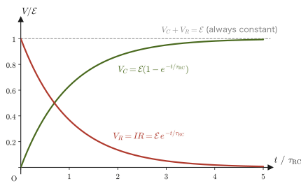
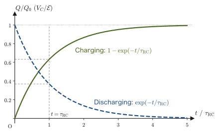

Chapter 37Steady Current and Electric Circuits
In the previous two chapters we dealt with situations in which the charges are at rest (electrostatics). But what powers a flashlight or a smartphone is charge that keeps flowing through a wire—an electric current. When a current flows, the charges in the wire are no longer at rest, but there is a certain kind of “steadiness”: whichever cross section of the wire we look at, the amount of charge passing through it per unit time does not change. This state—“flowing, and yet the same wherever we look”—is called a steady current.
In high school physics, you will have memorized $I=\dfrac{\Delta Q}{\Delta t}$, $V=RI$ (Ohm's law), $R=\rho\dfrac{l}{S}$, and the formulas for the equivalent resistance of series and parallel connections as given formulas. In this chapter we rewrite them using calculus and vectors, and see where these formulas come from. $R=\rho l/S$ and $\sigma=ne^2\tau/m_{\mathrm e}$ are derived from the balance between the force that the free electrons receive from the electric field and the resistive force due to collisions with the lattice (the Drude model). This has mathematically the same structure as the “resistive force proportional to the velocity” that we studied in Chapter 7. On the other hand, the equivalent resistance of series and parallel connections and Kirchhoff's laws follow from the conservation of current (conservation of charge) and the single-valuedness of the electric potential. Conservation of charge itself is condensed into a single equation (the continuity equation) by means of the divergence theorem, which we learned in the earlier chapters.
After reading this chapter, you will be able to (1) estimate the speed at which the free electrons in a copper wire move, (2) find the current in each branch of an intricately interconnected circuit by solving simultaneous equations, and (3) predict the charging and discharging of an RC circuit by means of a differential equation.
- Expressing the current in three ways ($I=\dd Q/\dd t$, $I=envS$, and the surface integral of the current density $\bm j$), and confirming that they all represent the same quantity
- The definition of the current density $\bm j=\rho\bm v$, and the derivation of conservation of charge (the continuity equation) $\nabla\cdot\bm j=-\pdiff{\rho}{t}$ by means of the divergence theorem
- The mechanical derivation of the resistance $R=\rho l/S$ from the free-electron model (the Drude model) that underlies Ohm's law $V=RI$ (and its local form $\bm j=\sigma\bm E$), and the meaning and magnitude of resistivity
- Joule heating and electric power $P=IV=I^2R=V^2/R$
- The derivation of the series connection $R=R_1+R_2$ and the parallel connection $1/R=1/R_1+1/R_2$ of resistors, and Kirchhoff's laws, which allow us to solve an arbitrary circuit network
- In an RC circuit, which combines a capacitor and a resistor, the transient phenomena (charging and discharging) in which the charge changes exponentially, and their energy balance
Source notes: Yasuhide Mochizuki, Physics Notes: Electromagnetism, pp. 13–16.
37.1 The Definition of Current and Three Ways to Express It
In high school physics, “current” is introduced with a rough intuitive image—something like “the strength of the electricity flowing through a wire”—and you will have been given the formula $I=\dfrac{\Delta Q}{\Delta t}$. Here, including where this formula comes from, we redefine the quantity called current from three different points of view. Please make sure you see that all three represent the same quantity—only the angle from which we look differs.
Definition 37.1: Electric current
The magnitude of the electric charge (quantity of charge) that passes through a cross section of a conductor (a material, such as a metal wire, that contains charges able to move freely) in 1 second is called the electric current. We write the current as $I\ [\mathrm A]$. From the definition, the unit of current is the unit of electric charge, $\mathrm C$ (coulomb), divided by the unit of time, $\mathrm s$ (second):
$$ [\mathrm A]=\left[\frac{\mathrm C}{\mathrm s}\right],\qquad\text{that is}\qquad 1\ \mathrm A = 1\ \mathrm{C/s} $$(The ampere is one of the SI base units; in fact the unit of current is defined first, and the unit of electric charge, $1\ \mathrm C=1\ \mathrm{A\,s}$, is a unit derived from the current. In high school and the first year of university, however, intuition about electric charge is easier to grasp, so in this book we take electric charge as already known and introduce current from it.)
Caution: By convention, the direction of the current is the direction in which positive charge moves
By convention, the direction of the current is the direction in which positive charge moves (a convention that was fixed before the existence of the electron was known). What actually moves in a metal are the free electrons, which carry negative charge, so in a metal the direction of the current is opposite to the direction of the electrons' motion. In the figures below as well, we draw the arrow for the electrons and the arrow for the current $I$ pointing in opposite directions.
37.1.1 Way 1: The instantaneous current $I=\dd Q/\dd t$
Suppose that a charge $\Delta Q\ [\mathrm C]$ passes through a cross section of a conductor during a time $\Delta t\ [\mathrm s]$. Then, by Definition 37.1, the average current over that interval is immediately
$$ I_{\text{average}}=\frac{\Delta Q}{\Delta t} $$In general, however, the current can vary from moment to moment, so to determine “the current at time $t$” precisely we must follow the same procedure as the passage from the average rate of change to the instantaneous rate of change that we learned in high school mathematics. That is, we consider the limit in which $\Delta t$ is made smaller and smaller:
\begin{equation} I(t)=\lim_{\Delta t\to0}\frac{\Delta Q}{\Delta t}=\frac{\dd Q}{\dd t} \label{eq:37-current-def} \end{equation}The right-hand side is the derivative of the charge $Q(t)$ (which may be regarded as the cumulative charge that has already passed through the cross section) with respect to time $t$, and is exactly the definition of the derivative itself (as we will see in Section 37.7, this relation “current = time derivative of charge” is also the starting point for setting up the differential equation of a circuit containing a capacitor). Eq. \eqref{eq:37-current-def} is the most fundamental defining equation of the current.
37.1.2 Way 2: Expression through the average velocity of the free electrons, $I=envS$
In a conductor such as a metal, the atoms stay at fixed positions (lattice sites), but the outermost-shell electrons of each atom (the free electrons) belong to no particular atom and can move about freely inside the conductor. When a potential difference (voltage) is applied across the ends of a conductor, for example by connecting a battery, the whole collection of free electrons receives a force from the electric field and moves as if it were being gradually pushed along in a certain direction. The average speed of this slow movement of the electron collection is called the average velocity (also called the drift velocity), and we write it $v\ [\mathrm{m/s}]$.
Consider a wire of cross-sectional area $S\ [\mathrm m^2]$, let $n\ [\mathrm{1/m^3}]$ be the number of free electrons per $1\ \mathrm m^3$ (the free-electron density), and let $e\ [\mathrm C]$ be the elementary charge ($e=1.602\,176\,634\times10^{-19}\ \mathrm C$, the magnitude of the charge carried by one electron). As in Figure 37.1, suppose that the free electrons are moving leftward through the wire with average speed $v$ (so that the current flows rightward).
Derivation: $I=envS$
Since the free electrons are moving with average speed $v\ [\mathrm{m/s}]$, the distance they travel in 1 second is exactly $v\ [\mathrm m]$ (we are merely using the most basic relation, speed × time = distance, for the time $1\ \mathrm s$). Therefore the “free electrons that will pass through the cross section $S$ between now and 1 second from now” are, as in Figure 37.1, all the free electrons located within the range extending back a distance $v$ from the cross section toward the side from which the electrons come, and these are contained in a columnar region of volume
$$ vS\ [\mathrm m^3] $$(the volume of a column with base area $S$ and height $v$ is the base area times the height). The number of free electrons in this volume $vS$ is obtained by multiplying by the free-electron density $n$ (the number per $1\ \mathrm m^3$):
$$ n\times vS = nvS\ \text{electrons} $$The magnitude of the charge of one electron is the elementary charge $e$, so the magnitude of the charge carried by these $nvS$ electrons is
$$ e\times nvS = envS\ [\mathrm C] $$This is precisely “the charge that passes through the cross section in 1 second”, so by Definition 37.1 it is directly equal to the magnitude of the current $I$:
\begin{equation} I=envS \label{eq:37-i-envs} \end{equation}(Eq. \eqref{eq:37-i-envs} gives the magnitude of the current. As noted in the Caution above, its direction is opposite to the motion of the electrons. This is not limited to electrons: when carriers of charge $q$ and number density $n$ move with average speed $v$, the same argument gives $I=\abs{q}nvS$.)
∎
Intuition: Why does the current flow almost instantly even though the electrons move very slowly?
If we actually compute the average velocity $v$ of the free electrons in a metal from Eq. \eqref{eq:37-i-envs} (Example 37.1), we find that it is astonishingly small—less than $0.1\ \mathrm{mm}$ per second. And yet, when we flip the switch, the light comes on almost instantly. This is not a contradiction. The wire is already tightly packed with free electrons in advance (like a long hose filled with water), and the instant the switch is turned on and an electric field arises, the electrons at every place in the wire start to move almost simultaneously (the speed at which a change in the electric field propagates along a wire is, depending on the structure of the wire or cable, from several tens of percent to nearly 100% of the speed of light in vacuum). The slow motion of the individual electrons and the speed at which the “effect” called current propagates are entirely different matters—it is the same reasoning as in the case of a hose: when we turn the faucet at one end of the hose, water comes out of the opposite end almost instantly, and yet it is not the case that each individual water molecule has traveled from one end of the hose to the other.
Moreover, even if the speed of each electron is small, the free-electron density $n$ in $I=envS$ is enormously large, of the order of $10^{28}\ \mathrm{1/m^3}$, so the current $I$ itself can take a large value.
37.1.3 Way 3: The surface integral of the current density, $I=\iint_S\bm j\cdot\bm n\,\dd S$
Way 2 implicitly assumed that the cross-sectional area $S$ is constant and that the density of the current is uniform everywhere over the cross section. In general, however, the cross-sectional area may vary from place to place (as in a wire that narrows toward its tip), and the concentration of the current within a cross section may be uneven. We therefore introduce a finer quantity, the “current per unit area”.
Caution: The symbol $\bm j$ for the current density
In this book we write the vector representing this “current per unit area” as $\bm j$. Many books write the current density as $i$, but $i$ is easily confused with the imaginary unit (which appears in Chapter 7 and in alternating-current circuits) and with the instantaneous current of an alternating current, so in this book we use $\bm j$ for the current density (this convention does not change throughout Part V). The bold-face notation of the vector $\bm j$ follows the same convention as $\bm E,\bm D$, etc., introduced in Chapter 35.
We define the current density $\bm j$ so that $\dd I=\bm j\cdot\bm n\,\dd S$, where $\dd I$ is the current passing perpendicularly through a small area $\dd S$ ($\bm n$ is the unit vector perpendicular to the surface $\dd S$). Integrating this over the whole cross section $S$ (a surface integral; see the flux in University Mathematics, Section 20.5) gives the total current passing through the cross section $S$:
\begin{equation} I=\iint_S\bm j\cdot\bm n\,\dd S \label{eq:37-i-flux} \end{equation}This is the third way of expressing the current. $\bm j\cdot\bm n$ is the operation of extracting only the component of the current density vector perpendicular to the surface (the definition of the inner product, University Mathematics, Section 15.2), and it expresses the natural requirement that, for a current crossing the surface obliquely, only its perpendicular component is counted as having “passed through that surface”. In particular, when $\bm j$ is perpendicular to the cross section and uniform over the whole cross section, Eq. \eqref{eq:37-i-flux} simply becomes $I=jS$, that is, $j=I/S$. The unit of current density is therefore $[\mathrm{A/m^2}]$.
In the next section, Section 37.2, we express this current density $\bm j$ concretely in terms of free electrons, and confirm that Eq. \eqref{eq:37-i-envs} and Eq. \eqref{eq:37-i-flux} are connected without contradiction.
Example 37.1: Average velocity of free electrons in a copper wire
It is known that copper may be regarded as releasing one free electron per atom. The density of copper is $8.96\times10^3\ \mathrm{kg/m^3}$, and its atomic weight (molar mass) is $63.55\ \mathrm{g/mol}=63.55\times10^{-3}\ \mathrm{kg/mol}$. Using the Avogadro constant $N_{\mathrm A}=6.022\,140\,76\times10^{23}\ \mathrm{mol^{-1}}$, first find the free-electron density $n$ of copper. Next, when a current $I=1.0\ \mathrm A$ flows in a copper wire of cross-sectional area $S=1.0\ \mathrm{mm^2}=1.0\times10^{-6}\ \mathrm{m^2}$, find the average velocity $v$ of the free electrons.
Solution. The number of atoms contained in $1\ \mathrm{m^3}$ of copper (which equals the number of free electrons, since there is one per atom) is given by “density $\div$ molar mass $\times$ Avogadro constant”:
$$ n=\frac{8.96\times10^{3}\ \mathrm{kg/m^3}}{63.55\times10^{-3}\ \mathrm{kg/mol}}\times6.022\,140\,76\times10^{23}\ \mathrm{mol^{-1}}\approx8.49\times10^{28}\ \mathrm{1/m^3} $$(unit check: $\mathrm{(kg/m^3)/(kg/mol)\times mol^{-1}=(mol/m^3)\times mol^{-1}=1/m^3}$ is correct). Next, solving Eq. \eqref{eq:37-i-envs} ($I=envS$) for $v$ gives $v=I/(enS)$, so
$$ v=\frac{I}{enS}=\frac{1.0\ \mathrm A}{(1.602\times10^{-19}\ \mathrm C)\times(8.49\times10^{28}\ \mathrm{1/m^3})\times(1.0\times10^{-6}\ \mathrm{m^2})}\approx7.4\times10^{-5}\ \mathrm{m/s} $$(unit check: $\mathrm{A/(C\cdot(1/m^3)\cdot m^2)=A/(C/m)=(C/s)/(C/m)=m/s}$ is correct). Thus $v\approx0.074\ \mathrm{mm/s}$—a speed of less than $0.1\ \mathrm{mm}$ per second. As stated in the “Intuition” of Section 37.1.2, the motion of each individual electron is extremely slow, but because the wire is already densely packed with electrons beforehand, the current begins to flow almost instantaneously once the switch is turned on.
Example 37.2: A feel for the magnitude of the current density
A current $I=1.0\ \mathrm A$ flows uniformly in a copper wire of cross-sectional area $S=1.0\ \mathrm{mm^2}$ (the same situation as in Example 37.1). (1) Find the magnitude $j$ of the current density in $\mathrm{A/m^2}$. (2) From $j$ and the free-electron density $n$ found in Example 37.1, find the average velocity $v$ from $v=j/(en)$, and verify that it agrees with Example 37.1. (3) When this wire is cut by a plane tilted by $60^\circ$ from the plane perpendicular to the axis of the wire, find the area $S'$ of the cut surface and the current passing through that surface.
Solution. (1) Since the current is uniform and perpendicular to the cross section, $j=I/S$:
$$ j=\frac{1.0\ \mathrm A}{1.0\times10^{-6}\ \mathrm{m^2}}=1.0\times10^{6}\ \mathrm{A/m^2} $$(unit check: $\mathrm{A/m^2}$ is correct. We have $1\ \mathrm{A/mm^2}=10^6\ \mathrm{A/m^2}$). (2) Dividing both sides of $I=envS$ by $S$ gives $j=env$, so $v=j/(en)$:
$$ v=\frac{1.0\times10^{6}}{(1.602\times10^{-19})\times(8.49\times10^{28})}\approx7.4\times10^{-5}\ \mathrm{m/s} $$which agrees with the result of Example 37.1. (3) The normal $\bm n$ of a plane tilted by $60^\circ$ from the cross section perpendicular to the axis (of area $S$) makes an angle $\theta=60^\circ$ with $\bm j$ (Figure 37.2). The area of the cut surface is $S'=S/\cos\theta=1.0\ \mathrm{mm^2}/0.50=2.0\ \mathrm{mm^2}$, and $\bm j\cdot\bm n=j\cos\theta=0.50\times10^{6}\ \mathrm{A/m^2}$, so the current passing through it is
$$ I'=\iint_{S'}\bm j\cdot\bm n\,\dd S=(j\cos\theta)\,S'=(0.50\times10^{6})\times(2.0\times10^{-6})=1.0\ \mathrm A $$so it is the same $1.0\ \mathrm A$ as for the perpendicular cross section (no matter in which orientation the cross section is taken, the current measured is the same current passing through the wire).
37.2 Current Density and Conservation of Charge (the Continuity Equation)
Comparing $I=envS$ (Eq. \eqref{eq:37-i-envs}), derived in Section 37.1, with the expression in terms of the current density, $I=\iint_S\bm j\cdot\bm n\,\dd S$ (Eq. \eqref{eq:37-i-flux}), let us express the current density $\bm j$ concretely in terms of the particles that carry the charge (the carriers).
Derivation: The current density $\bm j=\rho\bm v$
Let $q$ be the charge of a single carrier ($q=-e$ for a free electron), $n$ the number density, and $\bm v$ the average velocity. The charge per unit volume due to the carriers alone (the charge density) is $\rho=qn\ [\mathrm{C/m^3}]$. Suppose the carriers pass through a flat surface $S$ (with unit normal vector $\bm n$) perpendicularly (that is, with $\bm v$ in the same direction as $\bm n$). The carriers that pass through the surface in the direction of $\bm n$ during a time $\Delta t$ are all those that were inside a column of base area $S$ and height $v\Delta t$, and there are $nSv\Delta t$ of them. The charge transported is $q\cdot nSv\Delta t=\rho vS\Delta t$, so the current measured in the direction of $\bm n$ is
$$ I=\rho vS $$(For free electrons, $\rho=-en<0$, so $I=-envS<0$. This means that, measured in the direction of $\bm n$ (the direction in which the electrons travel), the current is negative—that is, the true current points opposite to the direction of the electrons' motion—and its magnitude agrees with $envS$ of Section 37.1.)
Next, so that the result holds even when $\bm v$ is oblique to the surface or differs from place to place, consider an infinitesimal area $\dd S$. The carriers that pass through $\dd S$ per unit time are those in a column of base area $\dd S$ and slanted height (the height in the $\bm n$ direction) $\bm v\cdot\bm n$, so the current through the infinitesimal surface is
$$ \dd I=\rho\,(\bm v\cdot\bm n)\,\dd S=(\rho\bm v)\cdot\bm n\,\dd S $$We compare this with the definition of the current density, $\dd I=\bm j\cdot\bm n\,\dd S$. In order for this to hold for any infinitesimal surface and any orientation, the relation
\begin{equation} \bm j=\rho\bm v \label{eq:37-current-density} \end{equation}must hold.
∎
Definition 37.2: Charge density and current density
The charge per unit volume, determined at each position in a conductor, is called the charge density $\rho\ [\mathrm{C/m^3}]$. When a group of charges with charge density $\rho$ moves with velocity $\bm v$, the current density $\bm j\ [\mathrm{A/m^2}]$ is determined by Eq. \eqref{eq:37-current-density}, $\bm j=\rho\bm v$. If there are several kinds of carriers, it is the sum of the individual $\rho_i\bm v_i$. In a metal, the current is carried by free electrons (charge $-e$, number density $n$), so the charge density is $\rho=-en$ and the current density is
$$ \bm j=-en\,\bm v $$(its magnitude is $env$, and its direction is opposite to the direction in which the electrons move). Since the magnitude of the current density multiplied by the area gives the current (Eq. \eqref{eq:37-i-flux}), the unit of the current density is $[\mathrm{A/m^2}]$.
Caution: Even if the “net charge density” inside a metal is zero, the current density is not zero
Inside a metal, the charge density $-en$ of the free electrons is exactly canceled by the charge density $+en$ of the positive ions that form the lattice, so the total charge density (the net charge density) is $\rho=0$. However, the positive ions do not move and only the free electrons move, so the current density is $\bm j=-en\bm v\neq0$. The $\rho$ in the continuity equation that appears in the next subsection, Section 37.2.1, means the net charge density in this sense, including the positive ions and so on.
So far we have confirmed that the three ways of expressing the current—$I=\dd Q/\dd t$ (Eq. \eqref{eq:37-current-def}), $I=envS$ (Eq. \eqref{eq:37-i-envs}), and $I=\iint_S\bm j\cdot\bm n\,\dd S$ (Eq. \eqref{eq:37-i-flux}, with $\bm j=\rho\bm v$)—are all connected without contradiction.
37.2.1 Conservation of charge (the continuity equation)
Now that the current density $\bm j$ has been defined, let us next express, as an equation using the current density, the fundamental principle of nature that “charge is neither created nor destroyed on its own”—the conservation of charge. This uses exactly the same mathematical tool as when we derived Gauss's law from Coulomb's law in Chapter 35 (Section 35.3)—Gauss's divergence theorem (University Mathematics, Section 20.5)—and is the second example of an argument that recurs throughout electromagnetism.
Derivation: Conservation of charge $\nabla\cdot\bm j=-\pdiff{\rho}{t}$
First, let us confirm the meaning of the symbol $\nabla\cdot\bm j$ (read “nabla dot $\bm j$”). This is called the divergence of the current density $\bm j=(j_x,j_y,j_z)$, and in terms of components it is written
$$ \nabla\cdot\bm j\equiv\pdiff{j_x}{x}+\pdiff{j_y}{y}+\pdiff{j_z}{z} $$It is a quantity that expresses the strength with which current “wells up” at each point (University Mathematics, Section 19.1, Section 19.2).
As in Figure 37.3, consider an arbitrary closed surface $S$ in space that is fixed independently of time, and let $V$ be the region it encloses. The total charge inside the region $V$ at some time $t$ can be written, by taking the volume integral of the charge density $\rho$ (the multiple integral from University Mathematics, Section 7.1, extended to three dimensions), as
$$ Q=\iiint_V\rho\,\dd V $$Now suppose that charge flows out from the inside to the outside through the infinitesimal area $\dd S$ of this closed surface with current density $\bm j$. The total current flowing out of the whole surface is the surface integral of the form of Eq. \eqref{eq:37-i-flux} (we write a surface integral over the whole closed surface as $\oint_S$), $\oint_S\bm j\cdot\bm n\,\dd S$ ($\bm n$ is the outward unit normal vector at each point). The more charge flows out, the more the charge $Q$ remaining inside decreases—this is the natural relation “outflow = rate of decrease of the charge inside,” and written as an equation it becomes
$$ \oint_S\bm j\cdot\bm n\,\dd S=-\frac{\dd Q}{\dd t} $$(The minus sign appears on the right-hand side so that the outflow on the left-hand side is positive when $Q$ decreases ($\dd Q/\dd t<0$).) Now we apply Gauss's divergence theorem (University Mathematics, Section 20.5, or exactly the same theorem used when we derived Gauss's law from Coulomb's law with the divergence theorem in Section 35.3) to the left-hand side, which gives
$$ \oint_S\bm j\cdot\bm n\,\dd S=\iiint_V(\nabla\cdot\bm j)\,\dd V $$As for the right-hand side, since the region $V$ is fixed in time, the time derivative can be moved inside the integral. Here $\rho$ is a function $\rho(x,y,z,t)$ of both the position $(x,y,z)$ and the time $t$, and because we differentiate with the position held fixed and only the time as the variable, this differentiation becomes partial differentiation. Partial differentiation is written with the symbol $\partial$ (“round d,” or “partial”) and denoted $\pdiff{\rho}{t}$ (we use $\partial/\partial t$ rather than $\dd/\dd t$ in order to make explicit that $\rho$ depends on $x,y,z$ as well as on $t$):
$$ -\frac{\dd Q}{\dd t}=-\frac{\dd}{\dd t}\iiint_V\rho\,\dd V=-\iiint_V\pdiff{\rho}{t}\,\dd V $$Combining the two sides, we obtain
$$ \iiint_V(\nabla\cdot\bm j)\,\dd V=-\iiint_V\pdiff{\rho}{t}\,\dd V $$This relation must hold regardless of how the region $V$ is chosen (the shape and size of the closed surface $S$). For the contents of the volume integrals (the integrands) to give equal integrals over any region, the integrands themselves must be equal at each point (this is the standard final step common to arguments that use the divergence theorem, and it is also the argument we used when we rewrote Gauss's law in differential form in Chapter 35). Therefore
\begin{equation} \nabla\cdot\bm j=-\pdiff{\rho}{t} \label{eq:37-continuity} \end{equation}holds at each point.
∎
Law 37.1: Conservation of charge (the continuity equation)
Between the net charge density $\rho$ (the total charge density at that point, including immobile charges such as positive ions) and the current density $\bm j$, the following relation holds at every position and at every time:
$$ \nabla\cdot\bm j=-\pdiff{\rho}{t} $$At a point where the divergence of the current density is positive (a point where the current density “wells up” more strongly than its surroundings), the charge density at that place decreases with time. Conversely, at a point where the divergence is negative (a point where the current density is “sucked in”), the charge density increases. This expresses that charge is neither created nor destroyed but merely moves in the form of current, and it is one of the most fundamental conservation laws in electromagnetism.
Intuition: An analogy with the flow of water
Eq. \eqref{eq:37-continuity} is easy to picture by thinking of the flow of water. If more water flows out of a region than flows into it (if the divergence is positive), then naturally the amount of water in that region decreases. If we regard the charge density $\rho$ as “the density of a fluid called electricity” and the current density $\bm j$ as “the flow of that fluid,” then Eq. \eqref{eq:37-continuity} is nothing other than a quantitative statement, using the tool of divergence, of the intuitively obvious claim that “the more flows out of a place, the more the amount accumulated there decreases.” In fact, the law of conservation of mass in fluid dynamics (the continuity equation, $\nabla\cdot(\rho_{\text{mass}}\bm v)=-\partial\rho_{\text{mass}}/\partial t$) has exactly the same form as Eq. \eqref{eq:37-continuity}—between the density of “something that is conserved” and its flow, a relation of this form always holds.
In particular, for a steady current—a situation in which the current does not change with time—which is the subject of this chapter, the charge density at each point also does not change with time ($\pdiff{\rho}{t}=0$), so Eq. \eqref{eq:37-continuity} takes the especially simple form
\begin{equation} \nabla\cdot\bm j=0 \label{eq:37-continuity-steady} \end{equation}Inside a metal wire, a state with $\rho=0$ and $\bm j\neq0$ is realized (charge is flowing, yet it accumulates nowhere). Eq. \eqref{eq:37-continuity-steady} will appear again in Section 37.6, when we derive Kirchhoff's first law (the current law).
Derivation: For a steady current, the current is the same through every cross section of a wire
Together, two cross sections $S_1,S_2$ of a wire and the side surface $S_{\text{side}}$ of the wire between them form one closed surface enclosing that section of the wire. By Eq. \eqref{eq:37-continuity-steady} for a steady current and the divergence theorem, the surface integral over this entire closed surface is
$$ \oint_{S_1\cup S_2\cup S_{\text{side}}}\bm j\cdot\bm n\,\dd S=\iiint_V(\nabla\cdot\bm j)\,\dd V=0 $$Let us split the left-hand side into the three surfaces. The current flows only inside the wire and does not cross the side surface ($\bm j\cdot\bm n=0$ on the side surface), so the contribution of the side surface is 0, and
$$ \iint_{S_1}\bm j\cdot\bm n\,\dd S+\iint_{S_2}\bm j\cdot\bm n\,\dd S=0 $$Measured with the outward normal, the value is negative on $S_1$ because current flows in there, and positive on $S_2$ because current flows out there, so this means “the current flowing in through $S_1$ $=S_2$'s outgoing current.” That is, even if the cross-sectional area of the wire varies from place to place, the current $I$ through any cross section is the same.
∎
Example 37.3: The current does not change even when the cross-sectional area of the wire varies
A copper wire tapers smoothly from a cross-sectional area $S_1=3.0\ \mathrm{mm^2}$ to $S_2=1.0\ \mathrm{mm^2}$. When a steady current $I=3.0\ \mathrm A$ flows through this wire, what are the average velocities $v_1,v_2$ of the free electrons in the thick part (cross-sectional area $S_1$) and in the thin part (cross-sectional area $S_2$), respectively? You may use the free-electron density of copper $n\approx8.49\times10^{28}\ \mathrm{1/m^3}$ from Example 37.1. Also find the ratio of $v_1,v_2$, and explain the result by relating it to the derivation above.
Solution. Since the current is steady, as in the derivation above, the current $I$ has the same value at every cross section of the wire. Therefore, in both the thick part and the thin part, $I=envS$ (Eq. \eqref{eq:37-i-envs}) equals the same $I=3.0\ \mathrm A$, and from $v=I/(enS)$,
$$ v_1=\frac{I}{enS_1}=\frac{3.0}{(1.602\times10^{-19})(8.49\times10^{28})(3.0\times10^{-6})}\approx7.4\times10^{-5}\ \mathrm{m/s} $$ $$ v_2=\frac{I}{enS_2}=\frac{3.0}{(1.602\times10^{-19})(8.49\times10^{28})(1.0\times10^{-6})}\approx2.2\times10^{-4}\ \mathrm{m/s} $$Taking the ratio, $v_2/v_1=S_1/S_2=3.0$; that is, in the part where the cross-sectional area has become $1/3$, the average velocity of the free electrons is exactly three times as large. This is the same reasoning as when water flows through a channel that narrows: to carry the same amount of water, the flow speed must increase. Eq. \eqref{eq:37-continuity-steady} guarantees quantitatively that “if the same current (that is, the same amount of charge flowing) is maintained while the passage narrows, the carriers (free electrons) passing through it must move faster.” Note also that the magnitude of the current density, $j_1=I/S_1=1.0\times10^{6}\ \mathrm{A/m^2}$ and $j_2=I/S_2=3.0\times10^{6}\ \mathrm{A/m^2}$, is likewise three times as large in the thin part.
Example 37.4: Why does excess charge inside a conductor disappear?
Suppose that, for some reason, excess charge of charge density $\rho_0$ appears inside a conductor whose conductivity $\sigma$ is uniform, independent of position. Suppose that inside the conductor the local form of Ohm's law, $\bm j=\sigma\bm E$ (to be derived in Section 37.3), and the differential form of Gauss's law, $\nabla\cdot\bm E=\rho/\varepsilon_0$ (Chapter 35), both hold. (1) Derive and solve the differential equation satisfied by the charge density $\rho(t)$. (2) For copper ($\sigma=1/(1.68\times10^{-8}\ \Omega\cdot\mathrm m)$), find the time it takes for $\rho$ to become $1/e$ of its initial value, and state what the result means.
Solution. (1) Substituting $\bm j=\sigma\bm E$ into the continuity equation, Eq. \eqref{eq:37-continuity}, and taking $\sigma$ outside the differentiation because it is uniform, we obtain
$$ \pdiff{\rho}{t}=-\nabla\cdot\bm j=-\sigma\,\nabla\cdot\bm E=-\frac{\sigma}{\varepsilon_0}\rho $$(in the last equality we used Gauss's law $\nabla\cdot\bm E=\rho/\varepsilon_0$). At each point this is a differential equation of separable form with $t$ as its only variable, so its solution is $\rho(t)=\rho_0\exp(-t/\tau_{\mathrm e})$, where
$$ \tau_{\mathrm e}=\frac{\varepsilon_0}{\sigma} $$(2) Inserting the numbers, $\tau_{\mathrm e}=(8.854\times10^{-12}\ \mathrm{F/m})\times(1.68\times10^{-8}\ \Omega\cdot\mathrm m)\approx1.5\times10^{-19}\ \mathrm s$ (unit check: $\mathrm{F/m\cdot\Omega\,m=F\,\Omega=s}$ is correct). That is, even if excess charge is placed inside a conductor, it almost completely disappears (flowing away as a current) in an extremely short time, and the excess charge moves to the surface of the conductor and comes to electrostatic equilibrium. This is the dynamical reason for the electrostatic induction seen in Chapters 35 and 36 ($\bm E=0$ inside a conductor, with charge appearing only on the surface). Note also that this estimated time is far shorter than the interval between electron collisions that we will see in Section 37.3.2 (about $2.5\times10^{-14}\ \mathrm s$ in copper); it is a time scale on which the treatment $\bm j=\sigma\bm E$ itself does not hold, so there is no need to take the value $10^{-19}\ \mathrm s$ literally. What matters here is the conclusion that “charge cannot remain inside a conductor.”
37.3 Ohm's Law and the Microscopic Model of Resistance
The first law of electric circuits that one learns in high school physics is Ohm's law.
Law 37.2: Ohm's law
The voltage $V\ [\mathrm V]$ across a conductor and the current $I\ [\mathrm A]$ flowing through it are proportional:
\begin{equation} V=RI \label{eq:37-ohm} \end{equation}The constant of proportionality $R\ [\Omega]$ (ohm) is called the electrical resistance of that conductor, or the resistance for short. This relation is an empirical rule discovered experimentally by the German physicist Georg Simon Ohm (1789–1854), and is not a universal law that holds for every material (there are also many devices, such as semiconductors and diodes, for which voltage and current are not proportional; even for such devices one can define the instantaneous $R$ using Eq. \eqref{eq:37-ohm}, but $R$ itself then changes with $V$ and $I$). A material for which $R$ can be regarded as constant over a wide range, such as a metal, is sometimes called an ohmic conductor.
In high school physics, Law 37.2 was used merely as a given experimental fact. In this section, however, using the picture of free electrons introduced in Sections 37.1 and 37.2, we derive “why voltage and current are proportional” and “what properties of a conductor determine the resistance $R$” as a problem in mechanics—this is the essence of the first mechanical model of conduction in metals (the Drude model), conceived around 1900 by the German physicist Paul Drude (1863–1906).
37.3.1 Balance of the two forces acting on a free electron
Consider a cylindrical conductor of length $l\ [\mathrm m]$ and cross-sectional area $S\ [\mathrm m^2]$ with a voltage $V\ [\mathrm V]$ applied across its ends (Figure 37.4). The positive ions inside the conductor (the positively charged ions that remain after the metal atoms have released their free electrons; they are arranged on lattice sites and form the skeleton of the conductor) undergo thermal motion (small vibrations in place, which occur as long as the temperature is not absolute zero), but they stay near their lattice sites without moving far. The free electrons, on the other hand, can move around among these positive ions.
Along the length of the conductor, the voltage $V$ produces a uniform electric field $E=V/l\ [\mathrm{V/m}]$ (this is the relation $E=-\dd\varphi/\dd x$ between the electric field and the potential difference, integrated for the case of a uniform electric field; see Chapter 36). A free electron (whose charge has magnitude $e$) feels from this electric field a force of magnitude
$$ F_1=eE=e\cdot\frac{V}{l} $$Taking the direction of the electric field as the reference, this is a force acting on the electron, which is negatively charged, in the direction opposite to the field (the Coulomb force). On the other hand, the electron does not simply keep accelerating. Since it advances while constantly colliding with the thermally moving positive ions, the faster it goes, the stronger the resistive force it experiences—we suppose that it experiences a resistive force of exactly the same form as the “resistive force proportional to velocity” learned in the damped oscillations of Section 7.3 (Chapter 7),
$$ F_2=kv $$($k\ [\mathrm{kg/s}]$ is a constant of proportionality, and $v$ is the electron's average speed).
Derivation: Why the speed settles to a constant value (terminal velocity)
Taking the electron's mass to be $m_{\mathrm e}$, the equation of motion for the electron's average speed $v$ (with the direction opposite to the electric field taken as positive) is
$$ m_{\mathrm e}\frac{\dd v}{\dd t}=eE-kv $$As long as $v$ is small, $eE>kv$, so the electron accelerates; but as $v$ increases, the resistive force $kv$ increases and the acceleration $\dd v/\dd t$ becomes smaller. Eventually, when $eE=kv$ is reached, $\dd v/\dd t=0$ and $v$ no longer changes. This has exactly the same structure as the terminal velocity of a raindrop learned in high school physics (the speed at which gravity $mg$ and air resistance $kv$ balance, $mg-kv=0$). In fact, setting $u=eE-kv$ gives $\dd u/\dd t=-(k/m_{\mathrm e})u$ (separable form; University Mathematics, Section 33.2), and under the initial condition $v(0)=0$ it can be solved to give
$$ v(t)=\frac{eE}{k}\left(1-\exp(-kt/m_{\mathrm e})\right) $$As $t\to\infty$, we have $v\to eE/k$, and a rough measure of the time needed to settle there is $m_{\mathrm e}/k$ (in Section 37.3.2 we will see that this equals the interval $\tau$ between electron collisions; in copper it is about $10^{-14}\ \mathrm s$, so the electron can be regarded as moving at the terminal velocity almost all the time). An exponential function of this same form also appears in the RC circuit of Section 37.7.
∎
Derivation: $R=\rho\,l/S$ (the microscopic model of resistance)
A free electron is accelerated by the Coulomb force $F_1$, but the faster it goes, the stronger the resistive force $F_2$ becomes, so once $F_1=F_2$ is reached it moves at a constant speed and accelerates no further (as in the derivation above). The equation expressing the force balance is
$$ F_1=F_2 \qquad\Longrightarrow\qquad kv=e\cdot\frac{V}{l} $$Solving this for $v$ gives
\begin{equation} v=\frac{eV}{kl} \label{eq:37-drift-velocity} \end{equation}Substituting this $v$ into Eq. \eqref{eq:37-i-envs} ($I=envS$) of Section 37.1 gives
\begin{equation} I=envS=en\cdot\frac{eV}{kl}\cdot S=\frac{e^2nS}{kl}V \qquad\cdots\ \text{①} \label{eq:37-drude-current} \end{equation}On the other hand, by Law 37.2 (Ohm's law),
$$ I=\frac{V}{R} \qquad\cdots\ \text{②} $$Since ① and ② both express the same current $I$ in terms of the same voltage $V$, comparing the coefficients of $V$ gives
$$ \frac{e^2nS}{kl}=\frac{1}{R} \qquad\therefore\ R=\frac{k}{e^2n}\cdot\frac{l}{S} $$Here we introduce the quantity that combines $k,e,n$,
$$ \rho\equiv\frac{k}{e^2n}\ [\Omega\cdot\mathrm m] $$so that we obtain
\begin{equation} R=\rho\cdot\frac{l}{S} \label{eq:37-resistance} \end{equation}an equation showing that the resistance $R$ is determined only by the length $l$ and cross-sectional area $S$ of the conductor and by $\rho$, a quantity intrinsic to the material.
∎
Definition 37.3: Resistivity
The constant of proportionality $\rho=k/(e^2n)$ in Eq. \eqref{eq:37-resistance} is called the resistivity. The resistivity does not depend on the shape of the conductor (its length or thickness); it is determined only by properties of the material itself (the free-electron density $n$ and $k$, which expresses how readily electrons collide with the lattice). Its unit is $[\Omega\cdot\mathrm m^2/\mathrm m]=[\Omega\cdot\mathrm m]$, as one sees by rewriting Eq. \eqref{eq:37-resistance} as $\rho=RS/l$ (checking from the unit $\mathrm{kg/s}$ of $k$ also gives $\mathrm{kg/(s\,C^2\,m^{-3})=kg\,m^3/(s\,C^2)=\Omega\cdot m}$, which agrees).
Caution: $\rho$ for charge density and $\rho$ for resistivity—the same symbol, different quantities
Both the charge density introduced in Section 37.2 and the resistivity introduced in this section are traditionally written with the same letter $\rho$—this is merely a coincidence of notation, and the two are unrelated quantities. The charge density $\rho\ [\mathrm{C/m^3}]$ is “the quantity of charge per unit volume,” whereas the resistivity $\rho\ [\Omega\cdot\mathrm m]$ is “a material-specific quantity expressing how difficult it is for electricity to flow,” and their dimensions (units) are also completely different. In this book, from here on we will make clear each time, from the context (the units, or the preceding sentence), which meaning of $\rho$ is being used. Where confusion is possible, we distinguish them by adding words, as in “charge density $\rho$” and “resistivity $\rho$.”
Getting the picture: The longer and thinner the conductor, the greater its resistance
What we can read directly from Eq. \eqref{eq:37-resistance}, $R=\rho\,l/S$, is that the longer the conductor (the larger $l$), the greater the resistance, and the thicker it is (the larger $S$), the smaller the resistance. This agrees well with intuition—it is the same relationship as with hoses of the same material: water flows less easily through a longer hose and more easily through a thicker one. The resistivity $\rho$ expresses the intrinsic “difficulty of flow” of the material itself; for conductors made of the same material, $\rho$ is common to all of them, and the differences in $R$ come solely from the differences in shape ($l/S$).
37.3.2 The Drude model: relaxation time and conductivity
The constant $k$ (the coefficient of the resistive force $F_2=kv$) introduced in Eq. \eqref{eq:37-resistance} and Definition 37.3 is rewritten, in the Drude model, in terms of a somewhat more concrete physical picture. An electron undergoes collisions with the positive ions (or scattering by impurities and the like) at random times, on average once every $\tau\ [\mathrm s]$. This $\tau$ is called the relaxation time. At each collision the electron is thrown back in a random direction, so on average it loses the momentum that it had been gaining from the electric field.
Derivation: $k=m_{\mathrm e}/\tau$, $\sigma=ne^2\tau/m_{\mathrm e}$, and the local form of Ohm's law
Let $\bm v$ be the average velocity vector of the electrons and $\bm p=m_{\mathrm e}\bm v$ their average momentum. An electron (charge $-e$) feels the force $-e\bm E$ from the electric field $\bm E$, while at the same time it collides with probability $1/\tau$ per unit time and thereby loses the average momentum $\bm p$; hence the rate of change of the average momentum is
$$ \frac{\dd\bm p}{\dd t}=-e\bm E-\frac{\bm p}{\tau} $$(the second term on the right-hand side is the momentum lost per unit time through collisions). In the steady state $\dd\bm p/\dd t=0$, so
$$ \bm p=-e\tau\bm E\qquad\text{that is}\qquad \bm v=-\frac{e\tau}{m_{\mathrm e}}\bm E $$The magnitude is $v=eE\tau/m_{\mathrm e}$, and the electrons move opposite to the electric field. Comparing this with the result $v=eE/k$ of the force balance that used the resistive force $F_2=kv$, we find the correspondence
$$ k=\frac{m_{\mathrm e}}{\tau} $$(here $kv=(m_{\mathrm e}/\tau)v=p/\tau$ is nothing other than “the momentum lost per unit time through collisions”; unit check: $\mathrm{kg/s}$ is correct).
Next, substituting the above $\bm v$ into the current density $\bm j=-en\bm v$ (Definition 37.2), we obtain
\begin{equation} \bm j=-en\left(-\frac{e\tau}{m_{\mathrm e}}\bm E\right)=\frac{ne^2\tau}{m_{\mathrm e}}\bm E=\sigma\bm E,\qquad \sigma\equiv\frac{ne^2\tau}{m_{\mathrm e}} \label{eq:37-ohm-local} \end{equation}The relation $\bm j=\sigma\bm E$ is the “pointwise form” (local form) of Ohm's law, and $\sigma$ is called the conductivity (unit $[\mathrm{S/m}]$, where $\mathrm S$ (siemens) $=\Omega^{-1}$). As a unit check, $\mathrm{(1/m^3)\,C^2\,s/kg=C^2\,s/(kg\,m^3)=S/m}$, which is correct.
Let us see how this connects with Ohm's law $V=RI$ in the language of circuits. For a uniform conductor of length $l$ and cross-sectional area $S$, we have $E=V/l$ and $I=jS$, so
$$ I=jS=\sigma ES=\sigma\frac{V}{l}S\qquad\therefore\qquad V=\frac{l}{\sigma S}\,I=RI,\qquad R=\frac{l}{\sigma S}=\rho\,\frac{l}{S},\quad\rho=\frac1\sigma $$and Law 37.2 and Eq. \eqref{eq:37-resistance} are obtained again. Moreover, substituting $k=m_{\mathrm e}/\tau$ into $\rho=k/(e^2n)$, we get
\begin{equation} \rho=\frac{m_{\mathrm e}}{ne^2\tau},\qquad\text{therefore the conductivity (the reciprocal of the resistivity)}\quad \sigma=\frac1\rho=\frac{ne^2\tau}{m_{\mathrm e}} \label{eq:37-drude-conductivity} \end{equation}which is the standard result of the Drude model.
∎
Status of the Drude model
The Drude model is a classical-mechanics model devised around 1900, based on the naive picture that “electrons collide with positive ions.” In the modern understanding, electrons are not scattered in a perfectly regular crystal (this is due to the wave nature of the electron, that is, quantum mechanics); what causes scattering is impurities, crystal defects, lattice vibrations (phonons), and the like. Consequently, the picture of the electron's speed and of the collisions is corrected by quantum mechanics, but the form $\sigma=ne^2\tau/m_{\mathrm e}$ survives, and the relaxation time $\tau$ is used as a parameter determined from the experimentally measured resistivity.
Application: Why metals conduct electricity well and why resistance increases as temperature rises
Eq. \eqref{eq:37-drude-conductivity} shows that the conductivity $\sigma$ (how easily electricity flows) is larger the larger the free-electron density $n$ is, and the longer the relaxation time $\tau$ (how seldom collisions occur) is. Metals conduct electricity well because their free-electron density $n$ is very large (of the order of $10^{28}$–$10^{29}$ per $1\ \mathrm{m^3}$). Also, when the temperature rises, the thermal motion of the positive ions (lattice vibration) becomes more vigorous, and the free electrons are scattered more frequently—that is, the relaxation time $\tau$ becomes shorter and $k=m_{\mathrm e}/\tau$ becomes larger—so the resistivity $\rho=k/(e^2n)$ increases. This is the microscopic reason for the well-known, everyday property that the resistivity of a metal increases with temperature (for example, the filament of an incandescent lamp has a larger resistance in the steady state after it has been lit and become hot than when it is still cold just after being switched on). In a semiconductor, by contrast, a rise in temperature sharply increases the free-electron density $n$ itself, so the resistivity often decreases overall; this happens because the premise for metals, that the free-electron density is nearly independent of temperature, breaks down, and it lies beyond the scope of this book.
In practice, the temperature dependence of the resistivity of a metal is expressed, in the range near a reference temperature $T_0$, by the following linear formula, using the resistivity $\rho_0$ at $T_0$ and the temperature coefficient $\alpha\ [\mathrm{K^{-1}}]$:
$$ \rho(T)=\rho_0\left[1+\alpha\,(T-T_0)\right] $$For copper near $T_0=20\ ^\circ\mathrm C$, $\alpha\approx4\times10^{-3}\ \mathrm{K^{-1}}$ (when the temperature rises by $100\ \mathrm K$, the resistivity increases by about $40\%$). The large differences in resistivity among materials are summarized in Table 37.1.
| Material | Resistivity $\rho\ [\Omega\cdot\mathrm m]$ | Type |
|---|---|---|
| Silver | $1.6\times10^{-8}$ | Metal (among the lowest) |
| Copper | $1.7\times10^{-8}$ | Metal |
| Aluminum | $2.7\times10^{-8}$ | Metal |
| Iron | $1.0\times10^{-7}$ | Metal |
| Nichrome (Ni–Cr alloy) | approx. $1.1\times10^{-6}$ | Alloy (used for heating wire) |
| Pure silicon (room temperature) | approx. $2\times10^{3}$ (in the $10^{3}$ range, depending on the source) | Semiconductor |
| Glass | $10^{10}$–$10^{14}$ | Insulator |
Comparing the resistivities of copper and glass, depending on the kind of glass they differ by $18$ to $22$ orders of magnitude, roughly $20$ orders of magnitude. The distinction among conductors, semiconductors, and insulators is made mainly by the magnitude of this resistivity, and it is rare, even in nature, for a physical quantity to take values over such a wide range.
Example 37.5: Resistance of a copper wire and its dependence on thickness and material
A conducting wire of length $l=10\ \mathrm m$ and cross-sectional area $S=1.0\ \mathrm{mm^2}=1.0\times10^{-6}\ \mathrm{m^2}$ is made from copper wire of resistivity $\rho=1.68\times10^{-8}\ \Omega\cdot\mathrm m$ (a typical value for copper). (1) Find the resistance $R$ of this wire. (2) How many times $R$ is the resistance of a copper wire of twice the diameter (and the same length)? (3) Find the resistance of a nichrome wire ($\rho=1.1\times10^{-6}\ \Omega\cdot\mathrm m$) of the same shape (length $10\ \mathrm m$, cross-sectional area $1.0\ \mathrm{mm^2}$), and answer how many times the copper wire's resistance it is.
Solution. (1) Substituting the numerical values into Eq. \eqref{eq:37-resistance}, $R=\rho\,l/S$, we get
$$ R=(1.68\times10^{-8}\ \Omega\cdot\mathrm m)\times\frac{10\ \mathrm m}{1.0\times10^{-6}\ \mathrm{m^2}}\approx0.168\ \Omega $$(unit check: $\Omega\cdot\mathrm m\times\mathrm m/\mathrm m^2=\Omega$ is correct). Even for a fairly long copper wire of 10 m, the resistance is only about $0.17\ \Omega$—this is because copper's resistivity is particularly low even among metals (it conducts electricity well), which is one of the reasons copper is widely used for power transmission lines and for wiring in electronic circuits.
(2) If the diameter doubles, the cross-sectional area ($\propto$ the square of the diameter) becomes $S'=4S$. In $R=\rho l/S$ the quantities $\rho,l$ do not change, so $R'=\rho l/(4S)=R/4$; that is, the resistance becomes $\tfrac14$ times as large ($0.042\ \Omega$). When the wire is thicker, there are more paths for the current and the resistance decreases.
(3) Since the shape is the same, $l/S$ is the same, and the resistance is proportional to the resistivity:
$$ R_{\text{nichrome}}=(1.1\times10^{-6})\times\frac{10}{1.0\times10^{-6}}=11\ \Omega,\qquad\frac{R_{\text{nichrome}}}{R}=\frac{1.1\times10^{-6}}{1.68\times10^{-8}}\approx65 $$so the nichrome wire has a resistance about 65 times that of the copper wire. The reason nichrome is used for heating wire is discussed in Section 37.4.
Example 37.6: The relaxation time $\tau$ and the mean free path of copper
Using the free-electron density of copper, $n\approx8.49\times10^{28}\ \mathrm{1/m^3}$, found in Example 37.1, and the resistivity $\rho=1.68\times10^{-8}\ \Omega\cdot\mathrm m$ used in Example 37.5, (1) find the relaxation time $\tau$ of copper from Eq. \eqref{eq:37-drude-conductivity}. Take the electron mass to be $m_{\mathrm e}=9.109\,383\,7015\times10^{-31}\ \mathrm{kg}$. (2) Taking the speed of the conduction electrons in copper (the Fermi velocity, a result of quantum mechanics) to be $v_{\mathrm F}\approx1.6\times10^{6}\ \mathrm{m/s}$, find the distance an electron travels between collisions (the mean free path) $\ell=v_{\mathrm F}\tau$, and compare it with the interatomic spacing of copper (the nearest-neighbor distance is about $0.26\ \mathrm{nm}$). (3) For a current density $j=1.0\times10^{6}\ \mathrm{A/m^2}$ ($1\ \mathrm{A/mm^2}$), find the drift velocity $v=eE\tau/m_{\mathrm e}$ that the electric field gives the electrons, using the electric field in the conductor $E=\rho j$, and verify that it agrees with the result of Example 37.1.
Solution. (1) Solving Eq. \eqref{eq:37-drude-conductivity}, $\rho=m_{\mathrm e}/(ne^2\tau)$, for $\tau$ gives $\tau=m_{\mathrm e}/(\rho n e^2)$, so
$$ \tau=\frac{9.109\times10^{-31}}{(1.68\times10^{-8})\times(8.49\times10^{28})\times(1.602\times10^{-19})^2}\ \mathrm s\approx2.49\times10^{-14}\ \mathrm s $$That is, a free electron in copper is scattered on average once every $25\ \mathrm{fs}$ (femtoseconds, $1\ \mathrm{fs}=10^{-15}\ \mathrm s$), or $4\times10^{13}$ times per second. Working backward from $k=m_{\mathrm e}/\tau$ to $\rho=k/(e^2n)$ reproduces the original value.
(2) $\ell=v_{\mathrm F}\tau\approx(1.6\times10^{6}\ \mathrm{m/s})\times(2.49\times10^{-14}\ \mathrm s)\approx4.0\times10^{-8}\ \mathrm m=40\ \mathrm{nm}$. This is about 150 times the interatomic distance (about $0.26\ \mathrm{nm}$). In the naive Drude picture in which “electrons keep colliding with atoms,” an electron would pass straight through some 150 atoms between collisions, so the picture does not hold up. As stated in the note above, this shows that what causes the scattering is not the regularly arranged atoms themselves but the disorder of the lattice (lattice vibrations and impurities).
(3) Since $E=\rho j=(1.68\times10^{-8})\times(1.0\times10^{6})=1.68\times10^{-2}\ \mathrm{V/m}$,
$$ v=\frac{eE\tau}{m_{\mathrm e}}=\frac{(1.602\times10^{-19})\times(1.68\times10^{-2})\times(2.49\times10^{-14})}{9.109\times10^{-31}}\approx7.4\times10^{-5}\ \mathrm{m/s} $$which agrees with the drift velocity found in Example 37.1 ($I=1.0\ \mathrm A$, $S=1.0\ \mathrm{mm^2}$, that is, $j=1.0\times10^{6}\ \mathrm{A/m^2}$). The accumulation of the small amounts of momentum gained in the intervals between collisions produces this small but nonzero average drift velocity.
37.4 Joule Heating and Electric Power
When a current flows through a resistor, part of the electrical energy (in fact, all of it) is converted into thermal energy—this is why electric heaters and electric kettles become warm. Here, as an advanced topic, we treat this energy conversion quantitatively. Since we have just studied Ohm's law and the mechanical picture of resistance (Section 37.3), we derive the formula for electric power from “the meaning of electric potential,” and at the same time connect it with the picture of electron motion in Section 37.3, so that we understand the generation of heat as collisions between electrons and the lattice.
Derivation: Electric power $P=IV$
Recall the meaning of the potential difference (voltage) $V$ (Chapter 36). When a charge of quantity $\Delta Q$ moves through a potential difference $V$ “from higher to lower potential,” that charge does work $\Delta Q\times V$ on the outside (in this case, through collisions with the lattice of positive ions in the resistor). (Recall that the very meaning of the potential difference $V$ is the energy exchanged per unit charge.) If this movement of charge takes place during a time $\Delta t$, the power (work per unit time, that is, electric power) is
$$ P_{\text{average}}=\frac{\Delta Q\cdot V}{\Delta t}=\frac{\Delta Q}{\Delta t}\times V $$Taking the limit $\Delta t\to0$ gives $\Delta Q/\Delta t\to\dd Q/\dd t=I$ (Eq. \eqref{eq:37-current-def}), and hence we obtain the electric power as
\begin{equation} P=IV \label{eq:37-power-iv} \end{equation}This work is accomplished by the transfer, at each collision of a free electron with a positive ion inside the conductor, of part of the electron's kinetic energy to the thermal motion of the ions (that is, the temperature of the conductor)—in other words, in the end all of it is released outside the conductor as heat. This heat is called Joule heat.
∎
Check: Deriving $P=IV$ from the electron picture of Section 37.3
A single electron in a conductor of length $l$ and cross-sectional area $S$ (free-electron density $n$) receives a force of magnitude $eE$ from the electric field $E$ and moves with average speed $v$. The power that a single electron receives from the field is force × speed, $eE\cdot v$. Since the total number of free electrons in the conductor is $nSl$, the power for the whole conductor is
$$ (eEv)\times(nSl)=(envS)\times(El)=IV $$(we used $I=envS$ and $V=El$). Even though the field keeps doing work on the electrons, they keep a constant average speed $v$ (their kinetic energy does not increase), so the energy they receive is transferred to the thermal motion of the lattice through collisions. This is Joule heat. Also, per unit volume, the power of heat generation is $n\,(eEv)=(env)E=\bm j\cdot\bm E$, which, using $\bm j=\sigma\bm E$, can also be written as $\sigma E^2=\rho j^2$.
∎
Formula 37.1: Joule's law (three ways to express electric power)
When a voltage $V$ is applied to a resistance $R$ and a current $I$ flows, the power consumed there (the energy generated as heat per unit time) $P\ [\mathrm W]$ can be written in three ways using Ohm's law $V=RI$ (Eq. \eqref{eq:37-ohm}):
\begin{equation} P=IV=I^2R=\frac{V^2}{R} \label{eq:37-joule-law} \end{equation}(Substituting $V=RI$ into $IV$ gives $I^2R$, and substituting $I=V/R$ gives $V^2/R$—the three are equivalent expressions for the same quantity.) This is called Joule's law. The integral of power over time is the electric energy (the electrical energy consumed), and in daily life the unit $1\ \mathrm{kWh}=1000\ \mathrm W\times3600\ \mathrm s=3.6\times10^{6}\ \mathrm J$ is used.
Application: Heating wires and fuses
The heating parts of electric heaters, toasters, and electric kettles use alloys that have a relatively large resistivity and can also withstand high temperatures (nichrome wire, an alloy of nickel and chromium, is the typical example)—as the $I^2R$ in Eq. \eqref{eq:37-joule-law} shows, even for the same current, the larger the resistance $R$, the more heat is generated. Conversely, copper and aluminum, which have small resistivity, are used for power transmission lines and for the wiring of electronic circuits, to suppress wasteful heat generation (transmission loss). Moreover, when a current exceeding the permissible range flows in a circuit, there is a risk of fire or breakdown caused by the Joule heat in the wiring. For this reason a thin metal wire with deliberately high resistivity and a low melting point (a fuse) is built into the circuit, and it is also used as a safety device: when an excessive current flows, only that part melts first through Joule heating and protects the circuit.
Example 37.7: Time to heat water in an electric kettle
Consider an electric kettle whose heating wire, of resistance $R=20\ \Omega$, generates a constant power when connected to a power supply of voltage $V=100\ \mathrm V$. (1) Find the power $P$ generated by this heating wire. (2) Find the time required for this kettle to raise the temperature of water of mass $0.50\ \mathrm{kg}$ (specific heat $c=4186\ \mathrm{J/(kg\cdot K)}$) from $20\ ^\circ\mathrm C$ to $100\ ^\circ\mathrm C$ (a temperature difference $\Delta T=80\ \mathrm K$), assuming that all the heat generated is used to raise the temperature of the water. (3) When the thermal efficiency is $80\%$, find the required time and the electric energy consumed during that time (in $\mathrm{kWh}$).
Solution. (1) By Ohm's law the current is $I=V/R=100/20=5.0\ \mathrm A$, and by Eq. \eqref{eq:37-joule-law} the power is
$$ P=IV=5.0\times100=500\ \mathrm W\quad\left(\text{check: }I^2R=5.0^2\times20=500\ \mathrm W,\ \ V^2/R=100^2/20=500\ \mathrm W\right) $$(2) The quantity of heat needed to raise the temperature of the water by $\Delta T=80\ \mathrm K$ is, from the definition of specific heat (Section 23.2; the specific heat $c$ is “the quantity of heat needed to raise the temperature of a unit mass of a substance by one unit of temperature.” Here we use the specific heat in $\mathrm{kg}$ units, $c=4186\ \mathrm{J/(kg\cdot K)}$ ($=4.186\ \mathrm{J/(g\cdot K)}$, almost the same value as the specific heat of water in Chapter 23, $4.2\ \mathrm{J/(g\cdot K)}$)),
$$ Q=mc\Delta T=0.50\times4186\times80=167\,440\ \mathrm J\approx1.67\times10^{5}\ \mathrm J $$Since the power $P$ is the quantity of heat generated per unit time, the required time $t$ follows from $Q=Pt$:
$$ t=\frac{Q}{P}=\frac{167\,440}{500}\approx335\ \mathrm s\approx5.6\ \text{min} $$(3) Of the heat generated by the heating wire, $80\%$ reaches the water, so from $0.80\,Pt'=Q$,
$$ t'=\frac{Q}{0.80\,P}=\frac{167\,440}{0.80\times500}\approx419\ \mathrm s\approx7.0\ \text{min} $$The electric energy consumed during this time is $Pt'=500\ \mathrm W\times419\ \mathrm s\approx2.1\times10^{5}\ \mathrm J$, and converting it to $\mathrm{kWh}$ using $1\ \mathrm{kWh}=3.6\times10^{6}\ \mathrm J$ gives $2.09\times10^{5}/3.6\times10^{6}\approx0.058\ \mathrm{kWh}$.
37.5 Resistors in Series and in Parallel
In real circuits, several resistors are often used in combination. There are two main ways of combining resistors: series connection (connecting them in a single line) and parallel connection (connecting them in branches). In both cases, the question “if several resistors are taken together and regarded as a single resistor, what is the value for the whole (the equivalent resistance)?” can be answered from Ohm's law alone. In the circuit diagrams below, a battery is drawn with “the long thin line as the positive terminal ($+$) and the short thick line as the negative terminal ($-$).” The current is drawn in the direction in which it leaves the positive terminal of the battery, goes around the circuit, and returns to the negative terminal.
37.5.1 Series connection $R=R_1+R_2$
Derivation: Equivalent resistance of a series connection
As in Figure 37.6, when the resistors $R_1,R_2$ are connected in a single line (connected in series), there is only one path for the current, so the same current $I$ flows through $R_1,R_2$. The total voltage $V$ is the sum of the voltage drop $V_1$ across $R_1$ and the voltage drop $V_2$ across $R_2$ (in an electrostatic field, going once around the circuit and returning to the starting point brings the potential back to its original value, so the potential difference $V$ raised by the battery is entirely used up in the resistors along the way. This is the second law in Section 37.6):
$$ V=V_1+V_2 \qquad\cdots\ \text{①} $$For each resistor, by Ohm's law (Eq. \eqref{eq:37-ohm}),
$$ V_1=IR_1,\qquad V_2=IR_2 \qquad\cdots\ \text{②} $$(note that $I$ is common). Substituting ② into ①, we get
$$ V=IR_1+IR_2=(R_1+R_2)I $$If the whole is regarded as a single resistor $R$, then $V=RI$ should hold for the same $I$, so from a comparison of the two sides,
\begin{equation} R=R_1+R_2 \label{eq:37-series} \end{equation}is obtained.
∎
Formula 37.2: Equivalent resistance of a series connection
The equivalent resistance $R$ of resistors $R_1,R_2,\ldots,R_N$ connected in series is given by
$$ R=R_1+R_2+\cdots+R_N $$(one need only repeat the proof of Eq. \eqref{eq:37-series} as it is for three or more resistors). The equivalent resistance of a series connection is always larger than the resistance of any single resistor. Also, the total voltage $V$ is distributed among the resistors in proportion to their resistance values (voltage division). For two resistors, since $I=V/(R_1+R_2)$,
\begin{equation} V_1=\frac{R_1}{R_1+R_2}\,V,\qquad V_2=\frac{R_2}{R_1+R_2}\,V \label{eq:37-divider} \end{equation}37.5.2 Parallel connection $\dfrac{1}{R}=\dfrac{1}{R_1}+\dfrac{1}{R_2}$
Derivation: Equivalent resistance of a parallel connection
As in Figure 37.7, when the resistors $R_1,R_2$ are connected by branching (connected in parallel), both ends of $R_1,R_2$ are connected to the same two points (the branch point and the merge point of the circuit), so the voltage across each of $R_1,R_2$ equals the voltage $V$ of the whole circuit. On the other hand, the total current $I$ before branching is the sum of the currents $I_1,I_2$ into the two branches (this is a concrete example of the conservation of charge in Section 37.2—that the total current flowing into a branch point equals the total current flowing out—and we will generalize this as Kirchhoff's first law in Section 37.6):
$$ I=I_1+I_2 \qquad\cdots\ \text{①} $$For each resistor, by Ohm's law,
$$ V=R_1I_1,\qquad V=R_2I_2 \qquad\text{that is}\qquad I_1=\frac{V}{R_1},\quad I_2=\frac{V}{R_2} \qquad\cdots\ \text{②} $$(note that $V$ is common). Substituting ② into ①, we get
$$ I=\frac{V}{R_1}+\frac{V}{R_2}=\left(\frac{1}{R_1}+\frac{1}{R_2}\right)V $$If the whole is regarded as a single resistor $R$, then $I=V/R$ should hold for the same $V$, so from a comparison of the two sides,
\begin{equation} \frac{1}{R}=\frac{1}{R_1}+\frac{1}{R_2} \label{eq:37-parallel} \end{equation}is obtained. If there are only two terms, putting the right-hand side over a common denominator and taking the reciprocal gives
$$ R=\frac{R_1R_2}{R_1+R_2} $$so the result can also be written in this closed form.
∎
Formula 37.3: Equivalent resistance of a parallel connection
The equivalent resistance $R$ of resistors $R_1,R_2,\ldots,R_N$ connected in parallel is given by
$$ \frac{1}{R}=\frac{1}{R_1}+\frac{1}{R_2}+\cdots+\frac{1}{R_N} $$The equivalent resistance of a parallel connection is always smaller than the resistance of any single resistor (this agrees with intuition if we think that the paths for the current increase, so that the current flows more easily as a whole). For example, if two identical resistors $R$ are connected in parallel, the equivalent resistance is $R/2$.
Formula 37.4: Current division (distribution of current in a parallel connection)
When the total current $I$ flows into a parallel connection of two resistors $R_1,R_2$, the current in each branch is distributed in proportion to the reciprocal of the resistance (the ease of flow):
\begin{equation} I_1=\frac{R_2}{R_1+R_2}\,I,\qquad I_2=\frac{R_1}{R_1+R_2}\,I \label{eq:37-current-divider} \end{equation}(Proof: $V=RI=\dfrac{R_1R_2}{R_1+R_2}I$, and it suffices to substitute this into $I_1=V/R_1$.) The smaller the resistance of a branch, the more current flows through it.
Example 37.8: Equivalent resistance and current distribution in a circuit combining series and parallel connections
Resistors $R_1=2.0\ \Omega$ and $R_2=3.0\ \Omega$ are connected in parallel, and a further resistor $R_3=4.0\ \Omega$ is connected in series with this pair. (1) Find the equivalent resistance $R$ of the whole circuit. (2) When a voltage $V=10\ \mathrm V$ is applied to the whole circuit, find the total current $I$, the voltage across $R_3$, the voltage across the parallel part, and the currents $I_1,I_2$ through $R_1,R_2$.
Solution. (1) First, find the equivalent resistance of the parallel part of $R_1,R_2$ from Formula 37.3 (the closed form for two terms):
$$ R_{12}=\frac{R_1R_2}{R_1+R_2}=\frac{2.0\times3.0}{2.0+3.0}=\frac{6.0}{5.0}=1.2\ \Omega $$($R_{12}=1.2\ \Omega$ is even smaller than $R_1=2.0\ \Omega$, the smallest of the resistors connected in parallel.) Next, since this $R_{12}$ and $R_3$ are connected in series, by Formula 37.2 the equivalent resistance is
$$ R=R_{12}+R_3=1.2+4.0=5.2\ \Omega $$(2) The total current is $I=V/R=10/5.2\approx1.92\ \mathrm A$. This current passes through $R_3$, so the voltage across $R_3$ is $V_3=IR_3=1.92\times4.0\approx7.7\ \mathrm V$ and the voltage across the parallel part is $V_{12}=IR_{12}=1.92\times1.2\approx2.3\ \mathrm V$; indeed $V_3+V_{12}=10\ \mathrm V$ agrees with the total voltage (voltage division). In the parallel part the same voltage $V_{12}$ is applied to both resistors, so
$$ I_1=\frac{V_{12}}{R_1}=\frac{2.31}{2.0}\approx1.15\ \mathrm A,\qquad I_2=\frac{V_{12}}{R_2}=\frac{2.31}{3.0}\approx0.77\ \mathrm A $$and $I_1+I_2\approx1.92\ \mathrm A=I$. From Formula 37.4 (current division) as well, we find $I_1=\dfrac{3.0}{2.0+3.0}\times1.92\approx1.15\ \mathrm A$. A complicated network of resistors can likewise be reduced to a single equivalent resistance in the end by repeatedly applying the operations of “combining the parallel parts into one” and “combining the series parts into one” until it becomes simple (however, as we will see in Section 37.6, there are also networks that cannot be expressed by simple combinations of series and parallel connections alone, and for such cases Kirchhoff's laws are needed).
37.6 Kirchhoff's Laws
The series and parallel formulas we saw in Section 37.5 can be used when resistors are simply connected in a single row or split into branches, but they cannot be used as they are for more complicated networks that contain several batteries (for example, a circuit in which two loops share one branch). So we now learn two more general rules that work for any network, however complicated—Kirchhoff's laws (formulated by the German physicist Gustav Kirchhoff, 1824–1887).
37.6.1 Kirchhoff's first law (current law)
Derivation: The connection between Kirchhoff's first law and conservation of charge
As in Figure 37.8, suppose that several wires meet at one point (a node). If we enclose the immediate neighborhood of this node by a small closed surface $S$ (for example, a small sphere centered on the node), then the only things passing in and out through this closed surface are the currents flowing in the individual wires. Let $\bm n$ be the outward unit normal vector. At the cross sections of the incoming wires ($I_1,I_2$), the current density $\bm j$ points into the closed surface, so $\bm j\cdot\bm n<0$; at the cross sections of the outgoing wires ($I_3,I_4$), $\bm j\cdot\bm n>0$. The value of $\iint\bm j\cdot\bm n\,\dd S$ over the cross section of each wire is $-I_1,-I_2$ for the incoming wires and $+I_3,+I_4$ for the outgoing wires, so
$$ \oint_S\bm j\cdot\bm n\,\dd S=-I_1-I_2+I_3+I_4 $$On the other hand, for a steady current, Eq. \eqref{eq:37-continuity-steady}, $\nabla\cdot\bm j=0$, holds, so by the divergence theorem
$$ \oint_S\bm j\cdot\bm n\,\dd S=\iiint_V(\nabla\cdot\bm j)\,\dd V=0 $$(this is the same argument as the discussion of the cross section of a wire in Section 37.2). Therefore $-I_1-I_2+I_3+I_4=0$, that is, we obtain
\begin{equation} I_1+I_2=I_3+I_4 \label{eq:37-kcl} \end{equation}This is nothing other than the statement that “the total current flowing in through the closed surface equals the total current flowing out.”
∎
Law 37.3: Kirchhoff's first law (current law, KCL)
For any node of a circuit, the sum of the currents flowing into it equals the sum of the currents flowing out of it:
$$ \sum_{\text{flowing in}}I=\sum_{\text{flowing out}}I $$This is a translation of the conservation of charge for steady currents, $\nabla\cdot\bm j=0$ (Eq. \eqref{eq:37-continuity-steady}), into the language of circuit networks.
37.6.2 Kirchhoff's second law (voltage law)
To use the second law, we first need to fix some terminology.
Definition 37.4: Electromotive force and voltage drop
The electromotive force (emf) $\mathcal E\ [\mathrm V]$ is the energy that a battery gives to a charge of $1\ \mathrm C$ while carrying it from the negative terminal to the positive terminal. In this book we deal only with ideal batteries with internal resistance $0$; in that case the potential difference between the two terminals of the battery (positive and negative) equals $\mathcal E$ (the internal resistance of a battery is treated in Exercise 37.9). Passing through a battery from the negative terminal to the positive terminal, the electric potential rises by $\mathcal E$.
The voltage drop is the potential difference $IR$ that appears across a resistor $R$ when a current $I$ flows through it. Passing through a resistor in the direction of the current, the electric potential falls by $IR$ (current flows from the higher potential to the lower).
A point where the branches of a circuit meet is called a node, and a closed route within a circuit is called a loop (closed path). Also, ground (earth; its symbol is the three lines at the bottom of Figure 37.9) is a reference point at which the electric potential is fixed to be $0$.
In a circuit like that of Figure 37.9, the three resistors $R_1,R_2,R_3$ are neither simply in series nor in parallel ($R_2$ is shared by the left loop containing $R_1$ and the right loop containing $R_3$). The general procedure for solving such a circuit is Kirchhoff's second law.
Why “sum of emfs = sum of voltage drops”?—From the single-valuedness of the electric potential
For an electrostatic field $\bm E$, the total work that $\bm E$ does on a charge around any closed path is $0$ ($\oint\bm E\cdot\dd\bm l=0$, Chapter 36). In other words, the electric potential $\varphi$ is a quantity determined uniquely at each point of space, so if we return to the same point, we always return to the same potential as when we started. So let us go once around an arbitrary closed loop in a circuit (for example, the left loop of Figure 37.9: ground point → $\mathcal E_1$ → $R_1$ → node N → $R_2$ → $\mathcal E_2$ → ground point) in a chosen direction, adding up the rises in potential due to the batteries and the drops in potential due to the resistors. When we return to the starting point, the total change in potential must be exactly $0$—this is the physical content of the second law. Inside a battery, chemical forces push the charges up, but if we bundle that effect into the emf $\mathcal E$ as a rise in potential, it can be handled by the same rule. Note that if the magnetic field threading the loop changes with time, the electric field is no longer a conservative force field, and this rule needs to be modified (Chapter 40).
Law 37.4: Kirchhoff's second law (voltage law, KVL)
For any closed loop in a circuit, the sum of the emfs (battery voltages) contained in the loop equals the sum of the voltage drops across the resistors contained in the loop:
$$ \sum(\text{emfs})=\sum(\text{voltage drops}) $$(This relation comes from the single-valuedness of the electric potential: in going once around the loop in a chosen direction, the potential that the batteries raise and the potential that the resistors lower exactly cancel.)
Procedure: How to use Kirchhoff's laws and how to fix the signs
- First, assign a direction to the current in each branch provisionally, without worrying about whether it matches the actual direction (if the result of the calculation is negative, we simply interpret it as meaning that the current flows the opposite way).
- Choose the direction in which to go around the loop, and add the changes in potential one term at a time, starting from the starting point.
- When passing through a battery from the negative terminal to the positive terminal (the direction in which the battery pushes out current), the term is $+\mathcal E$; when passing from the positive terminal to the negative terminal, it is $-\mathcal E$.
- When passing through a resistor in the assumed direction of the current, the term is $-IR$ (the potential falls); when passing against the current, it is $+IR$.
- Set the total after going once around and returning to the starting point equal to $0$. Moving terms to the other side puts it in the form “sum of emfs = sum of voltage drops.”
Example 37.9: Finding the branch currents of a two-loop circuit
In the circuit of Figure 37.9, let $R_1=5\ \Omega$, $R_2=10\ \Omega$, $R_3=5\ \Omega$, $\mathcal E_1=10\ \mathrm V$, $\mathcal E_2=2\ \mathrm V$, $\mathcal E_3=6\ \mathrm V$ (in every battery the upper side is the positive terminal). Let $I_1$ be the current flowing into node N from the left branch, let $I_3$ be the current flowing into node N from the right branch, and let $I_2$ be the current flowing out of node N through the central branch ($R_2,\mathcal E_2$) to the ground point. Find $I_1,I_2,I_3$.
Solution. First, applying Law 37.3 (Kirchhoff's first law) to node N, we obtain
$$ I_1+I_3=I_2 \qquad\cdots\ \text{(a)} $$Next, we apply Law 37.4 (the second law) to the left loop (going once around in the direction ground point → $\mathcal E_1$ → $R_1$ → node N → $R_2$ → $\mathcal E_2$ → ground point). Starting from the ground point, we add the changes in potential one term at a time:
- Battery $\mathcal E_1$: we pass from the bottom (negative terminal) to the top (positive terminal), so the potential changes by $+\mathcal E_1$.
- Resistor $R_1$: the current $I_1$ points toward node N, that is, in the same direction as that in which we go around the loop, so the potential changes by $-I_1R_1$.
- Resistor $R_2$: the current $I_2$ points downward from node N, which is also the same direction as that in which we go around the loop, so the potential changes by $-I_2R_2$.
- Battery $\mathcal E_2$: its node-N side (the upper side) is the positive terminal, so we pass from the top (positive terminal) to the bottom (negative terminal), and the potential changes by $-\mathcal E_2$.
When we return to the ground point after one circuit, the total change in potential is $0$, so
$$ \mathcal E_1-I_1R_1-I_2R_2-\mathcal E_2=0\qquad\text{that is,}\qquad \mathcal E_1-\mathcal E_2=I_1R_1+I_2R_2 \qquad\cdots\ \text{(b)} $$Similarly, applying it to the right loop (ground point → $\mathcal E_3$ → $R_3$ → node N → $R_2$ → $\mathcal E_2$ → ground point), $\mathcal E_3-I_3R_3-I_2R_2-\mathcal E_2=0$ gives
$$ \mathcal E_3-\mathcal E_2=I_3R_3+I_2R_2 \qquad\cdots\ \text{(c)} $$Substituting the numerical values, (b) becomes $10-2=8=5I_1+10I_2$, and (c) becomes $6-2=4=5I_3+10I_2$. We could substitute (a) into (b) and (c) to eliminate $I_2$, but solving (a), (b), (c) as a system of three linear equations in three unknowns gives
$$ I_1=\frac{16}{25}=0.64\ \mathrm A,\qquad I_2=\frac{12}{25}=0.48\ \mathrm A,\qquad I_3=-\frac{4}{25}=-0.16\ \mathrm A $$The fact that $I_3$ came out negative means that the direction we assumed at first (flowing into node N) is opposite to the actual one—that is, in this branch a current of $0.16\ \mathrm A$ actually flows from node N toward the $\mathcal E_3$ side (the battery $\mathcal E_3$ is being charged). When using Kirchhoff's laws, we may assume the directions of the currents in any way at the start, and if a result comes out negative, we simply interpret the assumed direction as having been the reverse of the actual one. As a check, substituting into (a) gives $I_1+I_3=0.64+(-0.16)=0.48=I_2$, confirming that the first law is satisfied as well.
37.7 Transient Phenomena in RC Circuits — Charging and Discharging a Capacitor
In the sections so far, we have dealt consistently only with “steady current”—current that does not change with time. However, in a circuit that combines a resistor $R$ and a capacitor (capacitance $C$, Section 36.6)—an RC circuit—a transient phenomenon occurs: just after the switch is closed, the current changes with time and eventually settles to a constant value (in this case, $0$). The combination of a capacitor and a resistor is one of the most basic elements of electronic circuits, and it is also the setting in which the relation introduced in Section 37.1, “current is the time derivative of charge,” comes into its own as a differential equation for the time-varying charge $Q(t)$.
37.7.1 Charging—the process by which charge accumulates on the capacitor
Connect a battery of emf $\mathcal E\ [\mathrm V]$, a resistor of resistance $R\ [\Omega]$, a capacitor of capacitance $C\ [\mathrm F]$, and a switch in series in a single closed circuit (Figure 37.10). The switch is closed at time $t=0$, and we consider the process by which charge accumulates from the battery onto a capacitor that initially carried no charge ($Q(0)=0$). Let $Q(t)$ be the charge stored at time $t$ on the plate connected to the positive terminal of the battery (the opposite plate carries $-Q$), and let $I(t)$ be the current flowing in the circuit. The current flows in the direction that carries charge onto this plate, so $Q$ increases during charging, and the current is
$$ I=+\frac{\dd Q}{\dd t} $$(Although the space between the plates of a capacitor is insulated and no charge passes through it, a current flows in the wires. The current $I$ in the wire equals the rate $\dd Q/\dd t$ at which charge accumulates on the plate. The apparent break in the current between the plates is resolved by the displacement current of Section 42.1.)
We apply Kirchhoff's second law (Law 37.4) to this single-loop circuit. The emf $\mathcal E$, by which the battery raises the potential, equals the sum of the voltage drop $IR$ across the resistor (Ohm's law) and the voltage $Q/C$ across the capacitor (Definition 36.4; from $C=Q/V$, the voltage between the plates is $V=Q/C$):
$$ \mathcal E=IR+\frac{Q}{C} $$Substituting $I=\dd Q/\dd t$ (Eq. \eqref{eq:37-current-def}) here, we obtain the following differential equation for the unknown function $Q(t)$:
\begin{equation} \mathcal E=R\frac{\dd Q}{\dd t}+\frac{Q}{C} \label{eq:37-rc-charge-raw} \end{equation}Rearranging gives
\begin{equation} \frac{\dd Q}{\dd t}=\frac{C\mathcal E-Q}{RC} \label{eq:37-rc-charge-ode} \end{equation}The numerator $C\mathcal E-Q$ on the right-hand side represents “how much more room there is for charge to accumulate” (at $Q=C\mathcal E$ the capacitor voltage equals the battery voltage, and no more charge accumulates). This equation can be solved either as a separable equation (University Mathematics, Section 33.2) or as a first-order linear differential equation (Section 33.3).
Derivation: $Q(t)$ during charging (separation of variables)
Let $u(t)\equiv C\mathcal E-Q(t)$. Then $\dd u/\dd t=-\dd Q/\dd t$, so Eq. \eqref{eq:37-rc-charge-ode} becomes
$$ \frac{\dd u}{\dd t}=-\frac{u}{RC} $$Integrating both sides of $\dd u/u=-\dd t/(RC)$ gives $\ln\abs{u}=-t/(RC)+(\text{constant})$, so $u(t)=u_0\,\exp(-t/(RC))$ ($u_0$: arbitrary constant). The initial condition $Q(0)=0$ gives $u_0=u(0)=C\mathcal E$, so returning to $Q=C\mathcal E-u$ we obtain
\begin{equation} Q(t)=C\mathcal E\left(1-\exp(-t/(RC))\right) \label{eq:37-rc-charge-sol} \end{equation}This is the desired solution. The capacitor voltage is $V_C(t)=Q(t)/C=\mathcal E(1-\exp(-t/(RC)))$, and the current flowing in the circuit, obtained by differentiating Eq. \eqref{eq:37-rc-charge-sol}, is
\begin{equation} I(t)=\frac{\dd Q}{\dd t}=\frac{\mathcal E}{R}\exp(-t/(RC)) \label{eq:37-rc-charge-current} \end{equation}The voltage across the resistor is $V_R=IR=\mathcal E\,\exp(-t/(RC))$.
∎
Alternative solution: Solving by variation of constants
Writing Eq. \eqref{eq:37-rc-charge-ode} as $\dfrac{\dd Q}{\dd t}+\dfrac{1}{RC}Q=\dfrac{\mathcal E}{R}$, we see that it has the form of the first-order linear differential equation $y'+p(x)y=q(x)$ studied in University Mathematics, Section 33.3 ($y\to Q$, $x\to t$, $p=1/(RC)$ (constant), $q=\mathcal E/R$ (constant)). First, the general solution of the associated homogeneous equation $\dfrac{\dd Q}{\dd t}+\dfrac{1}{RC}Q=0$, obtained by setting the right-hand side to $0$, is $Q_{\text{hom}}(t)=A\exp(-t/(RC))$ ($A$: arbitrary constant). Next, following the method of variation of constants, we replace $A$ by a function of time $A(t)$ and substitute $Q(t)=A(t)\exp(-t/(RC))$. By the product rule, $\dd Q/\dd t=A'(t)\exp(-t/(RC))-\dfrac{1}{RC}A(t)\exp(-t/(RC))$, so the two terms containing $A(t)$ cancel each other (this is how the method of variation of constants works), and
$$ A'(t)\exp(-t/(RC))=\frac{\mathcal E}{R}\qquad\therefore\ A'(t)=\frac{\mathcal E}{R}\exp(t/(RC)) $$Integrating both sides with respect to $t$ gives $A(t)=C\mathcal E\,\exp(t/(RC))+A_0$ ($A_0$: constant of integration), so the general solution is $Q(t)=C\mathcal E+A_0\exp(-t/(RC))$. The initial condition $Q(0)=0$ gives $A_0=-C\mathcal E$, which agrees with Eq. \eqref{eq:37-rc-charge-sol} obtained above.
Definition 37.5: Time constant $\tau_{\mathrm{RC}}=RC$
The quantity $\tau_{\mathrm{RC}}\equiv RC\ [\mathrm s]$ appearing inside the exponential functions of Eq. \eqref{eq:37-rc-charge-sol} and Eq. \eqref{eq:37-rc-charge-current} is called the time constant of this RC circuit. (It is a different quantity from the relaxation time $\tau$ of electrons in Section 37.3.2, so we distinguish it by the subscript $\mathrm{RC}$.) Checking the dimensions, $[\Omega]\times[\mathrm F]=[\mathrm{V/A}]\times[\mathrm{C/V}]=[\mathrm{C/A}]=[\mathrm s]$, so it indeed has the dimension of time. The time constant is a measure of “how fast things change”: at $t=\tau_{\mathrm{RC}}$, in the case of charging, $Q(\tau_{\mathrm{RC}})/(C\mathcal E)=1-\exp(-1)\approx0.632$; that is, charging has progressed to about 63% of the final value.

37.7.2 Discharging—the process by which the charge stored on the capacitor flows out
Next, consider the case (discharging) in which the battery is disconnected from a capacitor that has been charged to a charge $Q_0$, and only the resistor $R$ is connected in its place to form a closed circuit. Since there is no battery, Kirchhoff's second law takes the simple form in which the voltage drop across the resistor equals the voltage across the capacitor: $IR=Q/C$. In discharging, $Q$ decreases, and the current flows out of the positive plate, through the resistor, and back to the negative plate. Since the rate at which the capacitor loses charge is the current, $I=-\dd Q/\dd t$. Combining these, we obtain
$$ -R\frac{\dd Q}{\dd t}=\frac{Q}{C} \qquad\text{that is,}\qquad \frac{\dd Q}{\dd t}=-\frac{1}{RC}Q $$This is a separable differential equation of the same form as the associated homogeneous equation obtained by setting the right-hand side to 0. Applying the method of separation of variables of Section 37.7.1 (or University Mathematics, Section 33.2) without modification, the general solution is $Q(t)=A\exp(-t/(RC))$, and the initial condition $Q(0)=Q_0$ gives $A=Q_0$, so
\begin{equation} Q(t)=Q_0\exp(-t/(RC)) \label{eq:37-rc-discharge-sol} \end{equation}The charge decays exponentially, this time with the same time constant $\tau_{\mathrm{RC}}=RC$ as in charging.

Intuition: Why does the time constant correspond to 63% and 37%?
Setting $t=\tau_{\mathrm{RC}}=RC$ in Eq. \eqref{eq:37-rc-charge-sol} gives $Q(\tau_{\mathrm{RC}})/(C\mathcal E)=1-\exp(-1)$. Here $e\approx2.718$ is Napier's number (a different quantity from the elementary charge $e$), so $\exp(-1)\approx0.368$, and therefore $1-\exp(-1)\approx0.632$. The figure $63.2\%$ itself has no deep meaning; it simply comes from a property of the exponential function: “$\exp(-x)$ becomes exactly $1/e$ times its initial value at $x=1$.” What matters is that $\tau_{\mathrm{RC}}$ is a quantity characteristic of the circuit that indicates “on what time scale the change takes place”—the larger $\tau_{\mathrm{RC}}$ is (that is, the larger $R$ or $C$ is), the more slowly charging and discharging proceed.
Application: The camera flash and the link to Chapter 33 of AD 02
The strobe (flash) of a disposable camera or a single-lens reflex camera uses the following mechanism: the capacitor is charged little by little from the battery (over several seconds), and at the moment of emission the charge in that capacitor is discharged all at once (in a millisecond or less) to obtain a strong light—to charge slowly and discharge instantly, the effective resistance $R$ is made very different in the charging circuit and in the discharging circuit. Also, the differential equation \eqref{eq:37-rc-charge-ode} set up in this section is the first example in which the method for “first-order linear differential equations” learned in the companion volume “University Mathematics” (AD 02), Chapter 33, can be used directly as a tool for quantitatively predicting the behavior of real electronic circuits. The same form of exponential change appears commonly in phenomena in which “the rate of change is proportional to the present quantity,” such as radioactive decay and the cooling of an object toward the ambient temperature.
Example 37.10: Charging time of a camera-flash capacitor
Consider an RC charging circuit with resistance $R=1.0\times10^{3}\ \Omega$, capacitance $C=470\times10^{-6}\ \mathrm F=470\ \mu\mathrm F$, and battery emf $\mathcal E=9.0\ \mathrm V$. Find the time constant $\tau_{\mathrm{RC}}$. Also find the time $t_{90}$ it takes for the capacitor voltage to reach 90% of the battery voltage ($V_C=0.90\,\mathcal E$).
Solution. By Definition 37.5,
$$ \tau_{\mathrm{RC}}=RC=(1.0\times10^{3})\times(470\times10^{-6})=0.47\ \mathrm s $$The capacitor voltage is $V_C(t)=\mathcal E(1-\exp(-t/\tau_{\mathrm{RC}}))$ (Eq. \eqref{eq:37-rc-charge-sol} divided by $C$), so the time at which $V_C=0.90\,\mathcal E$ is
$$ 0.90=1-\exp(-t_{90}/\tau_{\mathrm{RC}}) \quad\Longrightarrow\quad \exp(-t_{90}/\tau_{\mathrm{RC}})=0.10 \quad\Longrightarrow\quad t_{90}=\tau_{\mathrm{RC}}\ln\frac{1}{0.10}=\tau_{\mathrm{RC}}\ln10 $$Substituting the numerical values,
$$ t_{90}=0.47\times\ln10\approx0.47\times2.303\approx1.08\ \mathrm s $$That is, about 1.1 seconds after the switch is closed, this capacitor has been charged to 90% of the charge that it finally holds.
Example 37.11: Energy balance in RC charging
In an RC charging circuit with capacitance $C$, resistance $R$, and emf $\mathcal E$, find, up to the completion of charging ($t\to\infty$), (1) the work done by the battery, (2) the Joule heat generated in the resistor, and (3) the electrostatic energy stored in the capacitor, and confirm that energy conservation holds. Further, find the numerical values for $C=470\ \mu\mathrm F$ and $\mathcal E=9.0\ \mathrm V$.
Solution. (1) Each time the battery carries a charge $\dd Q$, it does work $\mathcal E\,\dd Q$, so the power of the battery is $\mathcal E\,\dd Q/\dd t=\mathcal E I$. The charge finally stored in the capacitor is $Q_\infty=C\mathcal E$, so
$$ W_{\text{battery}}=\int_0^\infty\mathcal E I\,\dd t=\mathcal E\int_0^{Q_\infty}\dd Q=C\mathcal E^2 $$(2) The Joule heat in the resistor is obtained by integrating Formula 37.1 ($P=I^2R$) over time and substituting $I=(\mathcal E/R)\exp(-t/\tau_{\mathrm{RC}})$ from Eq. \eqref{eq:37-rc-charge-current}:
$$ Q_{\text{heat}}=\int_0^\infty I^2R\,\dd t=\frac{\mathcal E^2}{R}\int_0^\infty \exp(-2t/\tau_{\mathrm{RC}})\,\dd t=\frac{\mathcal E^2}{R}\cdot\frac{\tau_{\mathrm{RC}}}{2}=\frac{\mathcal E^2}{R}\cdot\frac{RC}{2}=\frac12C\mathcal E^2 $$(3) The electrostatic energy of the capacitor is $U=\tfrac12CV^2$ by Formula 36.5, and finally $V=\mathcal E$, so $U=\tfrac12C\mathcal E^2$.
Therefore, $W_{\text{battery}}=C\mathcal E^2=\tfrac12C\mathcal E^2+\tfrac12C\mathcal E^2=Q_{\text{heat}}+U$, and energy conservation holds. Exactly half of the work done by the battery is stored in the capacitor, and the other half becomes Joule heat in the resistor. This ratio does not depend on the value of $R$ (if $R$ is small, a large current flows for a short time; if $R$ is large, a small current flows for a long time; in both cases the total amount of heat is the same). Numerically, $C\mathcal E^2=(470\times10^{-6})\times9.0^2\approx3.8\times10^{-2}\ \mathrm J$; half of this, $1.9\times10^{-2}\ \mathrm J$, is the Joule heat, and the remaining $1.9\times10^{-2}\ \mathrm J$ is the electrostatic energy.
37.8 Summary and Exercises
37.8.1 Summary
- The electric current $I$ is the electric charge passing through a cross section of a conductor per unit time. Because the direction of the current is defined as the direction in which positive charges move, in a metal it is opposite to the motion of the electrons. Three equivalent ways of expressing it: $I=\dd Q/\dd t$ (Eq. \eqref{eq:37-current-def}), $I=envS$ (free-electron model, an expression for the magnitude; Eq. \eqref{eq:37-i-envs}), and $I=\iint_S\bm j\cdot\bm n\,\dd S$ (the surface integral of the current density, Eq. \eqref{eq:37-i-flux}; in this book $\bm j$ is used for the current density—to avoid confusion with the imaginary unit $i$).
- The current density is given by the charge density and the average velocity as $\bm j=\rho\bm v$ (Eq. \eqref{eq:37-current-density}; in a metal, $\bm j=-en\bm v$). The conservation of charge (the continuity equation) $\nabla\cdot\bm j=-\pdiff{\rho}{t}$ (Law 37.1, Eq. \eqref{eq:37-continuity}) is derived using the divergence theorem, and for a steady current it reduces to $\nabla\cdot\bm j=0$ (Eq. \eqref{eq:37-continuity-steady}). It follows that the current is the same at every cross section of a wire.
- Ohm's law $V=RI$ (Law 37.2) is an empirical law. From the balance between the Coulomb force $F_1=eE=eV/l$ on a free electron and the resistive force $F_2=kv$, proportional to the velocity, due to collisions with the lattice, the resistance $R=\rho\,l/S$ (Eq. \eqref{eq:37-resistance}, $\rho=k/(e^2n)$: the resistivity) is derived mechanically. The resistivity has the same symbol $\rho$ as the charge density, but it is a different quantity (see the Caution box). In the Drude model we can set $k=m_{\mathrm e}/\tau$ ($\tau$: the relaxation time), and obtain the local form $\bm j=\sigma\bm E$ and the conductivity $\sigma=1/\rho=ne^2\tau/m_{\mathrm e}$ (Eq. \eqref{eq:37-ohm-local}, Eq. \eqref{eq:37-drude-conductivity}).
- Joule's law: the power consumed in a resistor is $P=IV=I^2R=V^2/R$ (Formula 37.1). All of it is released as heat (Joule heat). $1\ \mathrm{kWh}=3.6\times10^{6}\ \mathrm J$.
- Combining resistors: in series, $R=R_1+R_2+\cdots$ (Formula 37.2, voltage division); in parallel, $1/R=1/R_1+1/R_2+\cdots$ (Formula 37.3; current division is given by Formula 37.4).
- Kirchhoff's laws: the first law (the current law, Law 37.3) is a restatement, for circuit networks, of the conservation of charge for steady currents, $\nabla\cdot\bm j=0$. The second law (the voltage law, Law 37.4) comes from the single-valuedness of the electric potential (going once around a loop returns it to its original value). We take $+\mathcal E$ when passing through a battery from the negative to the positive terminal and $-IR$ when passing through a resistor in the direction of the current, and set the sum around the loop equal to $0$. Circuit networks that cannot be reduced to simple series and parallel combinations can also be solved.
- In an RC circuit, which combines a resistor and a capacitor, the differential equation satisfied by the charge $Q(t)$ (solvable by separation of variables, or by the method of variation of constants in University Mathematics, Section 33.3) gives the exponential transient phenomena of charging, $Q(t)=C\mathcal E(1-\exp(-t/\tau_{\mathrm{RC}}))$ (Eq. \eqref{eq:37-rc-charge-sol}), and of discharging, $Q(t)=Q_0\exp(-t/\tau_{\mathrm{RC}})$ (Eq. \eqref{eq:37-rc-discharge-sol}). The time constant $\tau_{\mathrm{RC}}=RC$ (Definition 37.5) is a measure of the speed of the change. Of the work $C\mathcal E^2$ done by the battery during charging, half becomes Joule heat and half becomes electrostatic energy.
37.8.2 Exercises
Exercise 37.1: Dimensional analysis of the two expressions for current, and the speed of electrons in a thin copper wire
(1) Confirm that $I=\dd Q/\dd t$ and $I=envS$ represent quantities of the same dimension (unit) by breaking down the units of each right-hand side. ($e$: the unit of electric charge, $n$: $1/\mathrm{m^3}$, $v$: $\mathrm{m/s}$, $S$: $\mathrm{m^2}$.) (2) When a current $I=0.50\ \mathrm A$ flows in a copper wire of diameter $0.50\ \mathrm{mm}$, find the magnitude $j$ of the current density and the average velocity $v$ of the free electrons ($n=8.49\times10^{28}\ \mathrm{1/m^3}$).
Hint: (1) Compare the fact that $[\dd Q/\dd t]=\mathrm{C/s}$ with writing out $[envS]$ as a product of the individual units, one by one. (2) The cross-sectional area is $S=\pi(d/2)^2$.
Exercise 37.2: Current through a tilted cross section
A wire carrying a uniform current density $\bm j$ (magnitude $j=2.0\times10^{6}\ \mathrm{A/m^2}$, directed along the axis of the wire), with cross-sectional area $S=1.0\ \mathrm{mm^2}$, is cut by a plane tilted by $30^\circ$ from the plane perpendicular to the axis. (1) Find the area $S'$ of the cut face. (2) Find the current $\iint_{S'}\bm j\cdot\bm n\,\dd S$ passing through the cut face using $\bm j\cdot\bm n=j\cos\theta$, and verify that it equals the current through the perpendicular cross section. (3) Show that the same holds for a general tilt angle $\theta$.
Hint: When the angle between the normal $\bm n$ of the cut face and $\bm j$ is $\theta$, the area of the cut face is $S/\cos\theta$ (Figure 37.2).
Exercise 37.3: Temperature dependence of resistivity (Advanced)
On the basis of the Drude model of Section 37.3 (Eq. \eqref{eq:37-drude-conductivity}, $\rho=m_{\mathrm e}/(ne^2\tau)$), explain qualitatively why the resistivity $\rho$ of a metal usually increases as the temperature rises. Also point out that this explanation assumes that the free-electron density $n$ of the metal hardly changes with temperature. Next, taking the temperature coefficient of copper to be $\alpha=4\times10^{-3}\ \mathrm{K^{-1}}$, find the resistance at $100\ ^\circ\mathrm C$ of the copper wire (Example 37.5) whose resistance is $0.168\ \Omega$ at $20\ ^\circ\mathrm C$, and find what multiple of its value at $20\ ^\circ\mathrm C$ the relaxation time $\tau$ has become.
Hint: What happens to the thermal motion of the positive ions (lattice vibration) as the temperature rises? Consider how that affects the relaxation time $\tau$ (the interval between collisions). For the quantitative part, use $\rho(T)=\rho_0[1+\alpha(T-T_0)]$ and the fact that $\rho\propto1/\tau$ if $n$ is constant.
Exercise 37.4: Energy check of the series and parallel formulas
Resistors $R_1=6.0\ \Omega$ and $R_2=3.0\ \Omega$ are (a) connected in series and (b) connected in parallel, and a voltage $V=12\ \mathrm V$ is applied across the two ends in each case. In each case, find the currents $I_1,I_2$ through the resistors and the powers $P_1,P_2$ consumed in them (Formula 37.1). Next, find the equivalent resistance $R$ from Formulas 37.2 and 37.3, calculate the total power $P=VI$ supplied by the source ($I$: the total current flowing out of the source), and confirm that $P=P_1+P_2$ holds in both cases (conservation of energy).
Hint: Use the fact that in a series connection the same current flows through each resistor, and in a parallel connection the voltage across each resistor equals $V$.
Exercise 37.5: Solving a circuit with Kirchhoff's laws
In the circuit of Figure 37.9, let $R_1=4\ \Omega$, $R_2=2\ \Omega$, $R_3=6\ \Omega$, $\mathcal E_1=8\ \mathrm V$, $\mathcal E_2=0\ \mathrm V$ (the middle branch has no battery, only the resistor $R_2$), and $\mathcal E_3=5\ \mathrm V$. In the same way as in Example 37.9, find the currents $I_1,I_3$ flowing into node N and the current $I_2$ flowing out of it.
Hint: Set up and solve the simultaneous equations obtained by putting $\mathcal E_2=0$ in the three equations (a), (b), (c) of Example 37.9.
Exercise 37.6: Derivation of the continuity equation using a small rectangular box (a review of the definition of divergence)
In Section 37.2 we derived the continuity equation $\nabla\cdot\bm j=-\partial\rho/\partial t$ using a closed surface of arbitrary shape and the divergence theorem. This time, consider a small rectangular box with sides $\Delta x,\Delta y,\Delta z$ (each face perpendicular to a coordinate axis). For each of the $x$, $y$, and $z$ directions, write down the difference between the “inflow through the inflow face” and the “outflow through the outflow face” in terms of the components $j_x,j_y,j_z$ of the current density, using the Taylor expansion up to first order, and derive the continuity equation again by setting their sum equal to the increase or decrease of the charge inside the box, $-\dd Q/\dd t=-\partial\rho/\partial t\cdot\Delta x\Delta y\Delta z$ (the procedure is the same as that of the derivation of the physical meaning of divergence learned in University Mathematics, Section 19.2).
Hint: For the $x$ direction, consider the difference between the inflow $j_x(x,y,z)\,\Delta y\Delta z$ through the face at $x$ and the outflow $j_x(x+\Delta x,y,z)\,\Delta y\Delta z\approx\left[j_x(x,y,z)+\pdiff{j_x}{x}\Delta x\right]\Delta y\Delta z$ through the face at $x+\Delta x$. Do the same for the $y,z$ directions and add up the contributions of the three directions.
Exercise 37.7: The time constant of an RC circuit and the speed of charging
An RC charging circuit has resistance $R=2.0\times10^{3}\ \Omega$, capacitance $C=100\times10^{-6}\ \mathrm F$, and emf $\mathcal E=5.0\ \mathrm V$. Find the time constant $\tau_{\mathrm{RC}}$. Also find the voltage $V_C(t)$ of the capacitor after $t=0.10\ \mathrm s$. Furthermore, when the fully charged capacitor is discharged through this resistor alone, find the time $t_{1/2}$ it takes for the voltage to fall to half ($\mathcal E/2$).
Hint: For charging, use $V_C(t)=\mathcal E(1-\exp(-t/\tau_{\mathrm{RC}}))$, which is Eq. \eqref{eq:37-rc-charge-sol} divided by $C$; for discharging, use $V_C(t)=\mathcal E\,\exp(-t/\tau_{\mathrm{RC}})$, which is Eq. \eqref{eq:37-rc-discharge-sol} divided by $C$. To find $t_{1/2}$, it suffices to solve $\exp(-t_{1/2}/\tau_{\mathrm{RC}})=1/2$.
Exercise 37.8: Joule heating and temperature rise of a copper wire
A current with current density $j=1.0\times10^{6}\ \mathrm{A/m^2}$ ($1\ \mathrm{A/mm^2}$) flows through a copper wire. (1) Find the Joule heat generated per unit volume per unit time, $p=\rho j^2$ ($\rho=1.68\times10^{-8}\ \Omega\cdot\mathrm m$). (2) Assuming that no heat escapes to the outside (adiabatic), find the rate of temperature rise $\dd T/\dd t$ of the copper and the temperature rise in $1$ minute (density of copper $8.96\times10^{3}\ \mathrm{kg/m^3}$, specific heat $385\ \mathrm{J/(kg\cdot K)}$). (3) State why the temperature of an actual wire does not keep rising this much.
Hint: The heat capacity per unit volume is (density) × (specific heat). The quantity of heat generated = heat capacity × temperature rise.
Exercise 37.9: Internal resistance of a battery and maximum power
An external resistance $R$ is connected to a battery of emf $\mathcal E$ and internal resistance $r$ (the battery can be regarded as an ideal battery with a resistance $r$ connected in series). (1) Find the current $I$ and the terminal voltage of the battery, $V=\mathcal E-Ir$. (2) Find the value of $R$ for which the power $P_R$ consumed in the external resistance $R$ is maximum, and express the maximum value in terms of $\mathcal E,r$. (3) For $\mathcal E=1.5\ \mathrm V$ and $r=0.50\ \Omega$, find $P_R$ for $R=0.50\ \Omega$ and for $R=2.0\ \Omega$.
Hint: Since this is a series connection, the total resistance is $R+r$. Differentiate $P_R=I^2R$ as a function of $R$.
37.8.3 References
- Yasuhide Mochizuki, Physics Notes: Electromagnetism (handwritten lecture notes, in Japanese). The source of this chapter (pp. 13–16).
- D. Halliday, R. Resnick and J. Walker, Fundamentals of Physics, 10th ed., Wiley, 2013.
- D. J. Griffiths, Introduction to Electrodynamics, 4th ed., Cambridge University Press, 2017.
- N. W. Ashcroft and N. D. Mermin, Solid State Physics, Holt, Rinehart and Winston, 1976 (a standard treatment of the Drude model).